Audio Settings Application Note
80000NT10007a Rev. 4 - 2010-10-04


Audio Settings Application Note
80000NT10007a Rev.4 – 2010-10-04
APPLICABILITY TABLE
PRODUCT
GM862-GPS
GM862-QUAD-PY
GM862-QUAD
GC864-QUAD
GC864-QUAD V2
GC864-PY
GE863-GPS
GE863-PY
GE863-QUAD
GE863-SIM
GE863-PRO3
GE864-PY
GE864-QUAD
GE864-QUAD V2
GE864-QUAD
Automotive
GE864-QUAD
Automotive V2
GE865-QUAD
GL865-DUAL
Reproduction forbidden without Telit Communications S.p.A. written authorization - All Rights Reserved
page 2 of 78


Audio Settings Application Note
80000NT10007a Rev.4 – 2010-10-04
DISCLAIMER
The information contained in this document is the proprietary information of Telit
Communications S.p.A. and its affiliates (“TELIT”).
The contents are confidential and any disclosure to persons other than the officers,
employees, agents or subcontractors of the owner or licensee of this document,
without the prior written consent of Telit, is strictly prohibited.
Telit makes every effort to ensure the quality of the information it makes available.
Notwithstanding the foregoing, Telit does not make any warranty as to the information
contained herein, and does not accept any liability for any injury, loss or damage of any
kind incurred by use of or reliance upon the information.
Telit disclaims any and all responsibility for the application of the devices characterized
in this document, and notes that the application of the device must comply with the
safety standards of the applicable country, and where applicable, with the relevant
wiring rules.
Telit reserves the right to make modifications, additions and deletions to this document
due to typographical errors, inaccurate information, or improvements to programs
and/or equipment at any time and without notice.
Such changes will, nevertheless be incorporated into new editions of this document.
Copyright: Transmittal, reproduction, dissemination and/or editing of this document as
well as utilization of its contents and communication thereof to others without express
authorization are prohibited. Offenders will be held liable for payment of damages. All
rights are reserved.
Copyright © Telit Communications S.p.A. 2010.
Reproduction forbidden without Telit Communications S.p.A. written authorization - All Rights Reserved
page 3 of 78


Audio Settings Application Note
80000NT10007a Rev.4 – 2010-10-04
Contents
1. Introduction ................................................................................................................ 7
1.1.
Scope ................................................................................................................................ 7
1.2.
Audience ........................................................................................................................... 7
1.3.
Contact Information, Support ........................................................................................... 7
1.4.
Document Organization .................................................................................................... 8
1.5.
Text Conventions .............................................................................................................. 9
1.6.
Related Documents .......................................................................................................... 9
1.7.
Document History ........................................................................................................... 10
2. The Audio Front End ..................................................................................................11
2.1.
Introduction .................................................................................................................... 11
2.2.
Functional Overview ...................................................................................................... 11
3. Why HS, MT and HF ...................................................................................................16
3.1.
Terminology .................................................................................................................... 16
Figure 10.The Car environment version .................................................................................... 18
3.2.
Introduction .................................................................................................................... 19
3.2.1. History ................................................................................................................................................... 19
3.2.2. Nowadays transducers.......................................................................................................................... 19
3.3.
Selection mode ............................................................................................................... 20
3.3.1. GM862, GE863, GE/GC864-QUAD/PY Families ..................................................................................... 20
3.3.2. GE/GL865 and V2 Families .................................................................................................................... 20
4. Electrical Characteristics ..........................................................................................21
4.1.
Input lines ....................................................................................................................... 21
4.2.
Output lines .................................................................................................................... 22
4.3.
GM862, GE863, GE/GC864-QUAD/PY families audio design ............................................ 23
4.4.
Output lines GE/GL865 and V2 Families ......................................................................... 24
4.4.1. Considerations about maximum output voltage................................................................................... 25
5. Single Ended or Differential ......................................................................................26
5.1.
Concepts ......................................................................................................................... 26
5.1.1. Advantages ............................................................................................................................................ 26
5.1.2. Disadvantages ....................................................................................................................................... 27
6. Microphone Amplifier ................................................................................................28
Reproduction forbidden without Telit Communications S.p.A. written authorization - All Rights Reserved
page 4 of 78


Audio Settings Application Note
80000NT10007a Rev.4 – 2010-10-04
6.1.
Single Ended (unbalanced) ............................................................................................. 28
6.2.
Differential (balanced) .................................................................................................... 28
6.3.
Suggestions .................................................................................................................... 29
6.3.1. EMI protection ....................................................................................................................................... 29
7. Speaker amplifier ......................................................................................................30
7.1.
Single Ended (S.E.) ......................................................................................................... 30
7.2.
Differential (BTL) ............................................................................................................ 30
7.3.
Suggestions .................................................................................................................... 31
8. Electret Microphone ..................................................................................................32
8.1.
Generality ....................................................................................................................... 32
8.2.
Principle of operation ..................................................................................................... 32
8.3.
Types .............................................................................................................................. 32
8.4.
Performance ................................................................................................................... 33
8.4.1. Electrical Characteristics ..................................................................................................................... 34
8.4.2. Differential Connection Advantages ..................................................................................................... 34
8.4.3. Internal Amplifier .................................................................................................................................. 35
8.5.
Biasing Voltage ............................................................................................................... 35
8.5.1. Biasing Source ...................................................................................................................................... 36
8.5.2. Reminder ............................................................................................................................................... 36
8.5.3. Unbalanced Biasing .............................................................................................................................. 36
8.5.4. Practical Suggestions ........................................................................................................................... 37
8.5.5. Balanced Biasing ................................................................................................................................... 38
9. Input Paths Guide Lines ............................................................................................40
9.1.
Reminder ........................................................................................................................ 40
9.2.
Noise immunity ............................................................................................................... 40
9.3.
Practical suggestions ..................................................................................................... 41
9.3.1. HandsFree ............................................................................................................................................. 42
9.4.
Definitions ...................................................................................................................... 42
9.4.1. Normal Spoken Condition ..................................................................................................................... 42
9.4.2. Sensitivity and electrical equivalent level ............................................................................................. 43
9.4.3. Microphone Electrical Level ................................................................................................................. 43
9.5.
Microphone connections ................................................................................................. 43
9.5.1. Coupling ................................................................................................................................................. 44
9.5.2. Maximum Gain ....................................................................................................................................... 45
9.5.3. Single Ended (Unbalanced) External Amplifier .................................................................................... 46
9.5.4. Fully Differential (Balanced) Buffering ................................................................................................. 49
9.5.5. AFE Mic GAIN PARAMETERS ................................................................................................................ 51
Reproduction forbidden without Telit Communications S.p.A. written authorization - All Rights Reserved
page 5 of 78


Audio Settings Application Note
80000NT10007a Rev.4 – 2010-10-04
9.5.6. Transmit Block Diagrams ..................................................................................................................... 51
10. Output paths guidelines .............................................................................................53
10.1.
Reminder .................................................................................................................... 53
10.2.
Practical suggestions .................................................................................................. 53
10.3.
Mini Speaker characteristics ...................................................................................... 54
10.4.
AF Power Requirements ............................................................................................. 54
10.4.1. HandSet and Portable HandsFree ........................................................................................................ 54
10.4.2. Fixed HandsFree (car kit/speakerphone) ............................................................................................. 54
10.5.
Speaker Connections .................................................................................................. 55
10.5.1. Direct connection .................................................................................................................................. 55
10.5.2. External Amplifier ................................................................................................................................. 56
10.6.
AFE EAR Gain Parameters .......................................................................................... 60
10.6.1. Receive Block Diagrams ....................................................................................................................... 60
11. The DTMF detection problem ....................................................................................62
11.1.
DTMF signal characteristics ....................................................................................... 62
11.2.
DTMF generation ......................................................................................................... 63
11.2.1. First scenario ........................................................................................................................................ 63
11.2.2. Second scenario .................................................................................................................................... 63
11.3.
Suggestions ................................................................................................................. 65
12. Echo cancellation ......................................................................................................66
12.1.
Generality .................................................................................................................... 66
12.2.
Definition ..................................................................................................................... 66
12.3.
Theory ......................................................................................................................... 66
12.3.1. AEC Scenario ......................................................................................................................................... 67
12.3.2. AFE ECHO block diagram ...................................................................................................................... 68
12.4.
AEC and Audio editable parameters ............................................................................ 69
12.4.1. EC module ............................................................................................................................................. 70
12.4.2. AGC module ........................................................................................................................................... 70
12.4.3. NR module ............................................................................................................................................. 70
12.5.
AEC and Audio parameters AT Commands ................................................................. 71
12.6.
Practical Suggestions ................................................................................................. 72
12.6.1. Warnings about RX →TX relation ........................................................................................................... 74
12.6.2. Suggestions ........................................................................................................................................... 75
12.7.
AEC Basic Profiles ...................................................................................................... 76
13. Telit Evaluation kit .....................................................................................................78
Reproduction forbidden without Telit Communications S.p.A. written authorization - All Rights Reserved
page 6 of 78


Audio Settings Application Note
80000NT10007a Rev.4 – 2010-10-04
1.
Introduction
1.1.
Scope
Scope of this document is to provide an overview of the technical aspects to consider
while implementing audio functionalities onto applications integrating Telit modules
specified in the aforementioned Applicability Table.
1.2.
Audience
This document is intended for Telit customers who are about to implement audio
functionalities into their projects.
1.3.
Contact Information, Support
For general contact, technical support, to report documentation errors and to order
manuals, contact Telit’s Technical Support Center (TTSC) at:
TS-EMEA@telit.com
TS-NORTHAMERICA@telit.com
TS-LATINAMERICA@telit.com
TS-APAC@telit.com
Alternatively, use:
http://www.telit.com/en/products/technical-support-center/contact.php
For detailed information about where you can buy the Telit modules or for
recommendations on accessories and components visit:
http://www.telit.com
To register for product news and announcements or for product questions contact
Telit’s Technical Support Center (TTSC).
Our aim is to make this guide as helpful as possible. Keep us informed of your
comments and suggestions for improvements.
Telit appreciates feedback from the users of our information.
Reproduction forbidden without Telit Communications S.p.A. written authorization - All Rights Reserved
page 7 of 78


Audio Settings Application Note
80000NT10007a Rev.4 – 2010-10-04
1.4.
Document Organization
This document contains the following chapters:
Chapter 1: “Introduction” provides a scope for this document, target audience, contact
and support information, and text conventions.
Chapter 2: “The Audio Front End” gives a functional overview of the Audio Front End
interface.
Chapter 3: “Why HS, MT and HF” tries to give an explanation from an historical point of
view about the fundamental differences between these acronyms.
Chapter 4: “Electrical Characteristics” describes the equipment providing
considerations about the input and output lines of the equipment.
Chapter 5: “Single Ended or Differential” provides a discussion about the use of these
two input and output configurations when designing audio amplifiers.
Chapter 6: “Microphone Amplifier” provides a discussion about the use of these two
configurations when designing microphone amplifiers.
Chapter 7: “Speaker amplifier” provides a discussion about the use of these two
configurations when designing speaker amplifiers.
Chapter 8: “Electret Microphone” provides a technical description and considerations
about electrets microphones (ECM).
Chapter 9: “Input Paths Guide Lines” indicates the Differential one as a better
configuration choice and provides practical suggestions.
Chapter 10: “Output paths guidelines” indicates the Differential one as a better
configuration choice and provides practical suggestions.
Chapter 11: “The DTMF detection problem” discusses about how the standard detection
algorithms are not able to recognize the DTMF components sent through a GSM voice
channel by the application of the customer.
Chapter 12: “Echo cancellation” explains how to overcome the acoustic echo signal
disturbance implementing an Acoustic Echo Controller in the firmware of the baseband
chip.
Reproduction forbidden without Telit Communications S.p.A. written authorization - All Rights Reserved
page 8 of 78


Audio Settings Application Note
80000NT10007a Rev.4 – 2010-10-04
Chapter 13: “Telit Evaluation kit” provides a brief description of the Telit Evaluation Kit
(EVK2) as far as audio settings are concerned.
1.5.
Text Conventions
Danger – This information MUST be followed or catastrophic equipment failure or
bodily injury may occur.
Caution or Warning – Alerts the user to important points about integrating the
module, if these points are not followed, the module and end user equipment may
fail or malfunction.
Tip or Information – Provides advice and suggestions that may be useful when
integrating the module.
All dates are in ISO 8601 format, i.e. YYYY-MM-DD.
1.6.
Related Documents
The following is a list of applicable documents downloadable from the Download zone’s
section of Telit’s website http://www.telit.com
GM862-QUAD/PY Hardware User Guide, 1vv0300748
GM862-GPS Hardware User guide, 1vv0300728
GC864 Hardware User Guide, 1vv0300733
GE863 Family Hardware User Guide, 1vv0300783
GE863-GPS Hardware User Guide, 1vv0300714
GE863-PRO3 Hardware User guide, 1vv0300773
GE864 Hardware User Guide, 1vv0300694
GE864-QUAD Automotive Hardware User Guide, 1vv0300779
GE865 Hardware User Guide, 1vv0300799
AT Commands Reference Guide, 80000ST10025a
Telit EVK2 User Guide, 1vv0300704
Reproduction forbidden without Telit Communications S.p.A. written authorization - All Rights Reserved
page 9 of 78


Audio Settings Application Note
80000NT10007a Rev.4 – 2010-10-04
1.7.
Document History
Revision
Date
Changes
0
2007-04-13 First release
1
2008-01-18 Added GE863-SIM to the Applicability Table
Corrected AT#VTS in AT+VTS (par. 11.2.1)
2
2008-04-17 Editing changes and integration fix of Rev0 and
Rev1
3
2009-05-14 Deleted UC864-E from Applicability table
Introduced family models contents’
discrimination.
Applied the new documents’ layout
Fixed minor references errors (figures’ and
tables’ numbers)
Deleted the Safety Recommendations paragraph
Edited the EVK2 paragraph
Edited Figures 17,19
Added figure 20bis
4
2010-10-04 Added GE/GC864-QUAD V, GE864-QUAD
Automotive V2 and 2GL865-DUAL to the
applicability table
Reproduction forbidden without Telit Communications S.p.A. written authorization - All Rights Reserved
page 10 of 78


Audio Settings Application Note
80000NT10007a Rev.4 – 2010-10-04
2.
The Audio Front End
2.1.
Introduction
The Audio Front End is part of the GSM/GPRS Baseband Systems. It comprises the
digital and analog circuits for receive and transmit audio operation and ringing.
In this document only the analog blocks will be dealt with, but at its end you can find
some paragraphs that describe the functionalities and suggest the implementations of
the Echo Canceller/Noise Suppressor/AutomaticGainControl modules that allow the
use of the M2M in HandsFree or Car kit environments, even if they are digital parts of
the firmware section.
In the rest of the document we shall refer to Baseband Audio Front End as AFE.
2.2.
Functional Overview
The AFE can be considered organized in three sections:
Interface to processor cores
Digital filters
Analog circuits
As declared, in this document we shall describe only the analog circuits that transform
the signals to and from the digital part of Baseband chip into analog signals usable by
both receive (DOWNLINK) and transmit (UPLINK) audio sections.
The following main functional blocks could be recognized:
Microphone supply generation
Analog Input filtering and buffering
Analog Output filtering and buffering
Ringer generation
The Ringer generation functionality is turned on setting the dedicated bits in the voice-
band part of the analog control register.
The AFE has two major operation modes, featuring a high quality dac/adc conversion
with buffering stages, allowing the connection of external acoustic transducers as
shown in figure 1:
Power-down mode: all analog parts are powered down and all digital part clocks are
switched off
Audio mode: all digital filters are connected to the interface buffers and the analog
part is enabled.
Reproduction forbidden without Telit Communications S.p.A. written authorization - All Rights Reserved
page 11 of 78


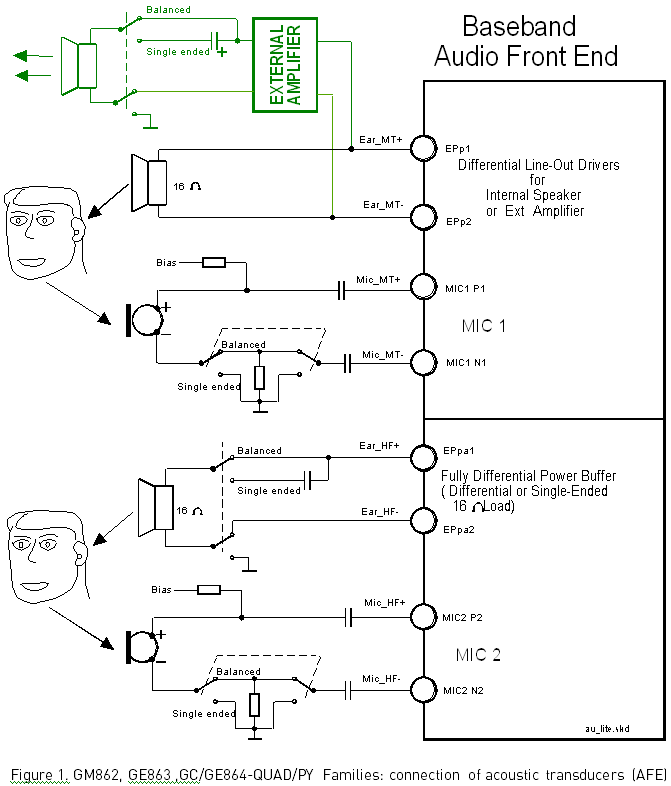
Audio Settings Application Note
80000NT10007a Rev.4 – 2010-10-04
Reproduction forbidden without Telit Communications S.p.A. written authorization - All Rights Reserved
page 12 of 78


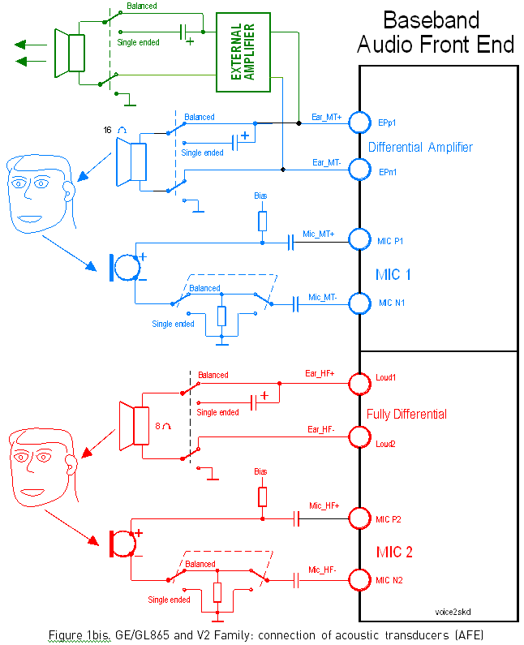
Audio Settings Application Note
80000NT10007a Rev.4 – 2010-10-04
Reproduction forbidden without Telit Communications S.p.A. written authorization - All Rights Reserved
page 13 of 78


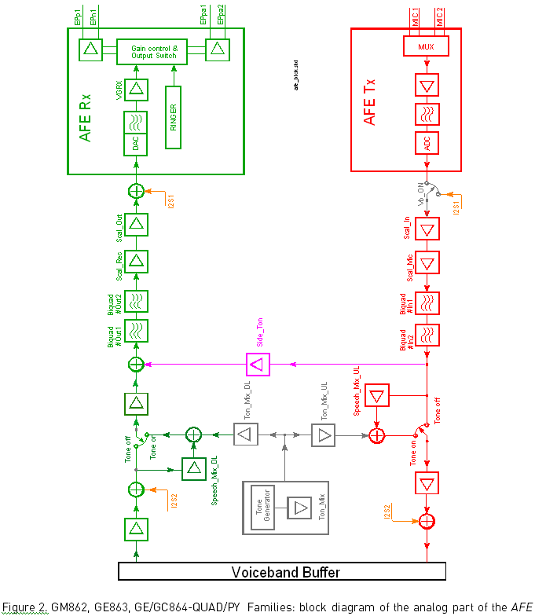
Audio Settings Application Note
80000NT10007a Rev.4 – 2010-10-04
Reproduction forbidden without Telit Communications S.p.A. written authorization - All Rights Reserved
page 14 of 78

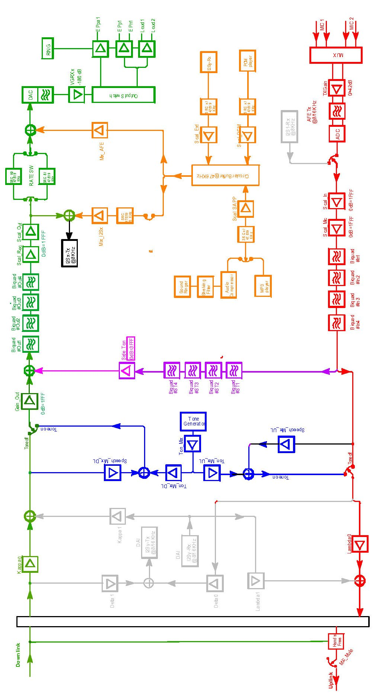
Audio Settings Application Note
80000NT10007a Rev.4 – 2010-10-04
Figure 2bis,GE/GL865and V2 Families: Block diagram of the analog part of the AFE
Reproduction forbidden without Telit Communications S.p.A. written authorization - All Rights Reserved
page 15 of 78

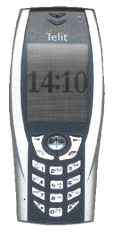
Audio Settings Application Note
80000NT10007a Rev.4 – 2010-10-04
3.
Why HS, MT and HF
Before explaining the acronyms HS-MT-HF, it is useful to make a short description list
of the acoustic transducers.
3.1.
Terminology
Transducer is a device, usually electrical, electronic, or electro-mechanical that
converts one type of energy to another one for various purposes, including
measurement or information transfer.
HandSet (or MicroTelephone) is the combined hand-held unit of microphone
(transmitting capsule) and earpiece/headphone (receiving capsule), particularly
suitable for use in connection with of a standard telephone. The spring-loaded hinge
ensures that the headphone from outside fits tightly to the ear and at the same time
holds the microphone in the correct position.
Figure 3. HandSet is the transceiver for the audio on a wired telephone.
Figure 4. HandSet is the audio and radio transceiver on a mobile phone.
Transceiver is a device that has both a transmitter and a receiver, which
are combined and share common circuitry or a single housing.
Headphones are a pair of transducers that convert an electrical signal into audible
sound waves, generally used to prevent other people from hearing the
sound either for privacy or to prevent disturbance (as in a public library).
Figure 5. Headphones.
Reproduction forbidden without Telit Communications S.p.A. written authorization - All Rights Reserved
page 16 of 78


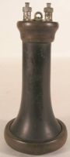
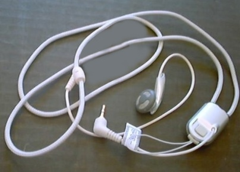

Audio Settings Application Note
80000NT10007a Rev.4 – 2010-10-04
Earphones (or Earbuds) are Headphones of a smaller size that are
placed directly outside of the ear canal, but without fully enveloping it
In the 1990s Earbuds became a common type bundled with personal
music devices.
Figure 6.The headphones included with the iPod® are Earbuds.
HeadSets are also commonly understood to refer to a combination of Headphones with an attached
Microphone, used for two-way communication (for example with a mobile phone).
Earpiece is a small dimensions transducer that fits in (hearing aid) or is held next to the ear
(telephone receiver); it is composed by a speaker and its holder.
Figure 7. The Earpieces had big dimensions at the beginning of telephony .
At left : a model common around the turn of the 20th century.
HandsFree is the name of equipments that can be used without hands during a call. Not only, have
they become also wireless by Bluetooth technology. HandsFree could be portable or fixed.
Portable . Used when talking by mobile phones, in some countries its
use is obligatory while driving.
Generally the user can answer the call by a single-touch button.
Figure 8. A Stereo version of Portable HandsFree.
Fixed.
In this case the telephone unit contains both a microphone and a loudspeaker separately from those
in the HandSet. It is use to transfer the input and output sounds from the HandSet to the ambient,
allowing several persons to participate in a call simultaneously without the telephone receiver being
held.
Reproduction forbidden without Telit Communications S.p.A. written authorization - All Rights Reserved
page 17 of 78


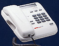
Audio Settings Application Note
80000NT10007a Rev.4 – 2010-10-04
A Fixed HandsFree kit fitted in the telephone unit is called Speakerphone.
It may be divided into half-duplex and full-duplex type:
the first one allows sound to travel in one direction at a time (from the
telephone line to its user or from its user to the telephone line ), while
the second one is able to transmit and receive simultaneously without
discernible change of transmission direction.
Figure 9. The Office environment version.
A Fixed HandsFree kit fitted into a car is called CAR-KIT.
It may be used by the driver and/or the passengers.
While driving, it is mandatory its use in the vehicles
Figure 10.The Car environment version
Reproduction forbidden without Telit Communications S.p.A. written authorization - All Rights Reserved
page 18 of 78


Audio Settings Application Note
80000NT10007a Rev.4 – 2010-10-04
3.2.
Introduction
As said before, both in transmit and in receive sections the AFE provides two audio
paths, active only one at time. Every section comprises two digital filter stages and two
buffering amplifiers, whose configuration could be Differential or Single Ended (see
paragraph 4).
Moreover the Sidetone functionality could be implemented by the amplifier fitted
between the transmit path and the receive path.
To select the well-suited section, refer to paragraph 3.3 Selection mode.
To know which are the suggested and requested performances of the audio
transducers, refer to paragraph 4.1, 4.2, 8.4.1 and 10.3.
3.2.1.
History
The Baseband chip was developed for the cellular phones, which needed two separated
amplifiers both in RX and in TX section : a couple of amplifiers had to be used with
internal audio transducers while the other couple of amplifiers must be used with
external audio transducers.
To distinguish the schematic signals and the Software identifiers, two different
definitions were introduced, with the following meaning:
internal audio transducers HS/MT (from HandSet or MicroTelephone )
external audio transducers HF (from HandsFree )
as exposed in the previous paragraph 3.1 Terminology.
3.2.2.
Nowadays transducers
For obvious reasons we have not changed the HS and HF acronyms, keeping them in
the Software and on the schematics.
NOTICE:
We want to remark that with the Telit modules this distinction is not necessary because
these two sections:
- have fully equivalent electrical performances (like the two microphone amplifiers)
- activate the same functionalities (like the Echo Canceller module)
- offer slightly different performances (like the two speaker buffering stages)
Reproduction forbidden without Telit Communications S.p.A. written authorization - All Rights Reserved
page 19 of 78


Audio Settings Application Note
80000NT10007a Rev.4 – 2010-10-04
3.3.
Selection mode
The activation of the requested audio section is made hardware by AXE line or software
by AT#CAP command.
The SIDETONE functionality is on at request in both modes.
The performances between the two input lines stages are the same, while the
performances between the two output lines stages differ.
3.3.1.
GM862, GE863, GE/GC864-QUAD/PY Families
The differential buffer may be used to drive an external amplifier or a 16Ω earpiece
only, at -12 dBFS gain when in HS/MT mode.
The fully differential output stage is able to drive a 16Ω load in differential or single-
ended operation when in HF mode.
NOTICE:
If you don’t have any load driving constraint (like a speaker with an impedance coil
lower than 16Ω ), being the performances between the two blocks like the same, the
choice could be done in order to overcome the PCB design difficulties, without
considerations to the electrical performances, but respecting the Baseband chip
specifications.
3.3.2.
GE/GL865 and V2 Families
The differential amplifier may be used to drive an external amplifier or a 16Ω
earpiece only, at -12 dBFS gain when in HS/MT mode.
The fully differential amplifier is able to drive 8Ω loudspeaker directly when in HF
mode. In this case, care has to be taken to not overload it, reducing the output power
at high ambient temperatures.
Reproduction forbidden without Telit Communications S.p.A. written authorization - All Rights Reserved
page 20 of 78


Audio Settings Application Note
80000NT10007a Rev.4 – 2010-10-04
4.
Electrical Characteristics
NOTICE:
Electrical characteristics of the Input and Output Lines for the UC864-E modules are
slightly different. Please refer to UC864 HW User Guide (1vv0300766a), paragraph 10.
4.1.
Input lines
The two transmit blocks are fully equivalent if connected in Differential mode.
line coupling
AC (*)
line type
Balanced
coupling capacitor
≥ 100nF
differential input resistance
50kΩ
differential input voltage
≤ 1,03V @ HSMicG=0dB
pp
Table 1. “Mic_MT” 1st differential microphone path
line coupling
AC (*)
line type
Balanced
coupling capacitor
≥ 100nF
differential input resistance
50kΩ
differential input voltage
≤ 1,03V @ HFMicG=0dB
pp
Table 2. “Mic_HF” 2nd differential microphone path
(*) DANGER:
AC means that the signals from the microphone have to be connected to input lines of
the module through capacitors of not less than 100nF. Not respecting this constraint,
the input stage will be damaged.
Reproduction forbidden without Telit Communications S.p.A. written authorization - All Rights Reserved
page 21 of 78


Audio Settings Application Note
80000NT10007a Rev.4 – 2010-10-04
(*) DANGER:
Because particular OEM applications need a single input line connection, a Single
Ended configuration could be implemented, thus halving the useful microphone signal :
don’t connect the unused input directly to Ground, but through a 100nF capacitor.
4.2.
Output lines
We suggest to drive the load differentially from both receive drivers, thus the output
swing is doubled and the need for the output coupling capacitor is eliminated. However
for particular OEM application needs also a Single Ended circuitry can be implemented,
thus reducing by four the output power.
The OEM circuitry shall be designed to reduce the common mode noise typically
generated on the ground plane and to get the maximum power output from the device
(low resistance tracks).
(*) DANGER:
The loads are directly connected to the amplifier outputs when in Differential
configuration, through a capacitor when in Single Ended configuration. Using Single
Ended configuration, the unused output line must be left open Not respecting this
constraint, the output stage will be damaged
Reproduction forbidden without Telit Communications S.p.A. written authorization - All Rights Reserved
page 22 of 78


Audio Settings Application Note
80000NT10007a Rev.4 – 2010-10-04
4.3.
GM862, GE863, GE/GC864-QUAD/PY families audio
design
During the design process, remember that there are slightly different electrical
performances when the load is driven directly from the internal audio amplifiers as
shown in figure 11 and figure 12:
the “Ear_MT” lines (EPN1 and EPP1 from the Differential Line-Out Drivers) can
directly drive a 16 Ω load at –12dBFS (**) in Differential configuration;
the “Ear_HF” lines (EPPA1_2 and EPPA2 from the Fully Differential Power Buffers)
can directly drive a 16Ω load in Differential or Single Ended configurations.
There is no difference if the amplifiers drive an external amplifier.
line coupling:
DC differential
AC single-ended
output load resistance :
≥ 14 Ω
internal output resistance:
4 Ω (typical)
signal bandwidth:
150 - 4000 Hz @ -3 dB
max. differential output voltage
1.31 V
(typical, open circuit)
rms
differential output voltage @ -12dBFS 328mV /16 Ω
rms
(**)
Table 3. “Ear_MT” Differential Line-out Drivers
(**) NOTICE:
0dBFS is the normalized overall Analog Gain for each Output channel equal to 3,7V
pp
differential.
line coupling:
DC differential
AC single-ended
output load resistance :
≥ 14 Ω
internal output resistance:
4 Ω (>1,7 Ω)
signal bandwidth:
150 - 4000 Hz @ -3 dB
max. differential output voltage
1.31 V
(typical, open circuit)
rms
max. single ended output voltage
656 mV
(typical, open circuit)
rms
Table 4. “Ear_HF” Fully Differential Power Buffers
Reproduction forbidden without Telit Communications S.p.A. written authorization - All Rights Reserved
page 23 of 78


Audio Settings Application Note
80000NT10007a Rev.4 – 2010-10-04
4.4.
Output lines GE/GL865 and V2 Families
The main difference in electrical performance is the maximum allowable load:
the “Ear_MT” Differential Amplifier (EPn1/EPp1) may drive a typical load ≥16 Ω at
–12dBFS (**)
the “Ear_HF” Fully Differential Amplifier (EPpA1_2/EPpA2) may drive a typical load
≥ 8Ω .
The loads are directly connected to the amplifier outputs when in Differential
configuration, through a capacitor when in Single Ended configuration.
line coupling:
DC differential
AC single-ended
output load resistance :
≥ 16 Ω
internal output resistance:
4 Ω (typical)
signal bandwidth:
150 - 4000 Hz @ -3dB
max. differential output voltage
1.31 V
(typical, open circuit)
rms
differential output voltage @ -12dBFS
328mV /16 Ω
rms
(**)
Table 3bis. “Ear_MT” Differential Amplifier
(**) NOTICE:
The gain is normalized to 0dBFS which is 3,7V differential and 1,85V single-ended .
pp
pp
line coupling:
DC differential
AC single-ended
output load resistance :
≥ 8 Ω
signal bandwidth:
150 - 4000 Hz @ -3dB
max. differential output power
350 mW @ Vbatt=3,7V
Table 4bis. “Ear_HF” Fully Differential Amplifier
Reproduction forbidden without Telit Communications S.p.A. written authorization - All Rights Reserved
page 24 of 78


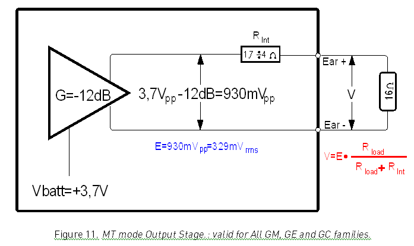
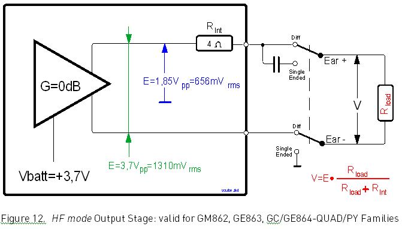
Audio Settings Application Note
80000NT10007a Rev.4 – 2010-10-04
4.4.1.
Considerations about maximum output voltage
If no external amplifier is used, don’t forget the “attenuation effect “of the internal
output resistance, as exposed in the following block diagrams.
Reproduction forbidden without Telit Communications S.p.A. written authorization - All Rights Reserved
page 25 of 78


Audio Settings Application Note
80000NT10007a Rev.4 – 2010-10-04
5.
Single Ended or Differential
Audio amplifiers could be designed in two configurations: single-ended and differential.
The differential output power amplifier configuration is also called bridge-tied load
(BTL).
In the next paragraphs we will discuss about the use of these two input and output
configurations.
Also calculation and circuit examples will be exhaustively performed in the following
chapter.
5.1.
Concepts
Any voltage can be characterized by a potential difference between two terminals.
The configuration of the two terminals and how the signal is delivered from output to
input allows the signal to be more generally described in one of three ways:
Single-ended signal. This is a signal delivered between a signal track and a ground.
One terminal for a single-ended connection is always at fixed potential (usually Ground).
Differential Signals. These are signals that travel through a pair of tracks. On the
signal pair, neither of the terminals is Ground.
Common mode Signals. They represent a special case of differential signals, also
traveling between a pair of tracks, where the voltage potential on both signals is the
same.
5.1.1.
Advantages
Differential amplifiers are desirable to use, especially in audio applications where the
amplitude of the signals is very low, like output of the microphones. The benefits
received from using differential amplifiers could be summarized as:
Increasing of Common Mode Rejection Ratio (CMRR). Differential inputs enable
cancellation of any noise common on both inputs. Noise generated at the input of the
amplifier has a greater effect than noise generated at the output, because any noise on
the input is multiplied by the gain of the amplifier.
Increasing of Signal to Noise Ratio (SNR). The inputs to the amplifier are particularly
sensitive to noise, because typically they are not driven by a very low impedance source.
Reproduction forbidden without Telit Communications S.p.A. written authorization - All Rights Reserved
page 26 of 78


Audio Settings Application Note
80000NT10007a Rev.4 – 2010-10-04
High Rejection in Electromagnetic Interference (EMI). Noise immunity is very
important in wireless devices because the RF signal is sent in bursts, so that the
frequency between two bursts falls in the audio bandwidth. The RF rectification is such
a problem that many manufacturers have to strongly shield the audio part of their
applications.
Doubling the Useful Signal Level .The voltage swing to the load is doubled, and then
the AF power to the load is 4 times the single-ended AF power at the same voltage
supply.
No need of output blocking capacitor. Even if the differential outputs are biased at
half-supply, no DC voltage exists across the load: therefore you will lower the overall
cost and save PCB space, because you don’t need the big, expensive and heavy blocking
electrolytic capacitors (generally from 33μF to 1000 μF).
Wider bandwidth. Due to the absence of blocking capacitors, the speaker impedance
creates no frequency limiting effect.
Less shielding is required from amplifier to load.
5.1.2.
Disadvantages
The additional track routing could be very difficult and requires more board space but
this is mainly the only one disadvantage while implementing a differential amplifier.
Reproduction forbidden without Telit Communications S.p.A. written authorization - All Rights Reserved
page 27 of 78


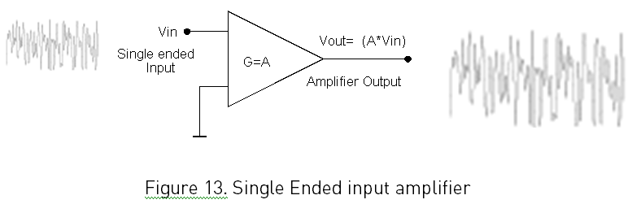
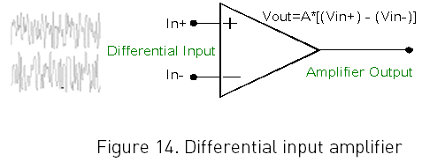
Audio Settings Application Note
80000NT10007a Rev.4 – 2010-10-04
6.
Microphone Amplifier
6.1.
Single Ended (unbalanced)
The basic diagram of a single ended input microphone amplifier is shown below; it
works as the name implies: the signal output is the Vin voltage multiplied by the
amplifier gain A.
With this configuration it is more difficult to obtain a good common mode rejection
(CMRR) because any signal appearing on input terminal will appear multiplied at the
output.
The advantage of having an unbalanced input device is that “it has only one active
signal”. Requiring less space on board, this configuration solves critical PCB
dimensions problems but in most cases introduce the need of strong shielding.
6.2.
Differential (balanced)
The basic diagram of a differential input microphone amplifier is shown below; it works
as the name implies: the signal output is the difference between the In+ and In-
voltages, multiplied by the amplifier gain.
Reproduction forbidden without Telit Communications S.p.A. written authorization - All Rights Reserved
page 28 of 78


Audio Settings Application Note
80000NT10007a Rev.4 – 2010-10-04
It is easy to understand why a differential input amplifier provides common mode
rejection (CMRR): only the difference between the input terminals is amplified, any
signal appearing on both input terminals will not appear at the output.
The most important factor in achieving benefits from differential input circuitry is the
PCB layout and not the choice of the transducer: differential tracks should always be
run close together from microphone to amplifier and from amplifier to module.
Matching track impedances is very important for maximizing CMRR, increasing SNR
and minimizing EMI.
All impedance elements should be added to both tracks of the differential pair and
tracks should always be run over a ground plane to shield from EMI.
The fact that ECM uses a FET output stage that essentially acts as a current source
makes it easier to connect its output differentially to produce a differential signal 6dB
higher than single-ended connected device.
6.3.
Suggestions
When using an amplifier with differential inputs, there are techniques to ensure that
the device is configured correctly. If the source driving the amplifier is:
Single-ended. Ground one amplifier input through a capacitor near the source of the
other input. Grounding the capacitor near the source enables common-mode noise
cancellation.
Differential. It is very important to keep the same length for the differential tracks,
close together to cancel any common mode noise induced in the trace itself.
Impedance should be matched between tracks, over audio frequencies as well as RF
frequencies
6.3.1.
EMI protection
Since electromagnetic waves induce current when propagating in the presence of a
conductor, EMI is almost always common mode in nature since the wavelengths are
usually quite large in comparison to the spacing between the differential traces. The
EMI-induced current translates to noise voltage and, if the track impedances are
matched, this will yield common mode voltages that will be rejected by the differential
amplifier.
It becomes quite clear that the following conditions should be observed to effectively
reject EMI, when designing a PCB for differential input amplifiers:
Differential tracks from the microphone to the amplifier should be traced close to
each other, to maximize the common mode rejection for EMI.
It is a good rule to space the differential tracks by one track width.
Reproduction forbidden without Telit Communications S.p.A. written authorization - All Rights Reserved
page 29 of 78


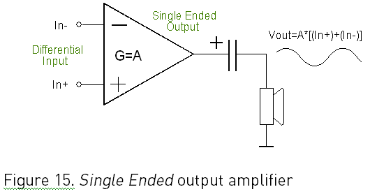
Audio Settings Application Note
80000NT10007a Rev.4 – 2010-10-04
7.
Speaker amplifier
The audio power amplifier is a critical component in your application; for this reason its
configuration becomes very important.
7.1.
Single Ended (S.E.)
The single ended signal output must be AC coupled to the load. Without the output
coupling capacitor, the half-supply bias across the load would result in both increased
internal IC power dissipation and also permanent loudspeaker damage.
Mainly we have only one advantage: having only one active track, the routing of signal
line requires less board space.
7.2.
Differential (BTL)
It provides a differential signal output, where the Vout- side is the mirror image of the
Vout+ side, without any AC coupling output capacitor.
In the differential drive, while one side of the amplifier is slewing up the other side is
slewing down, and vice versa: the voltage swing on the load is doubled.
Reproduction forbidden without Telit Communications S.p.A. written authorization - All Rights Reserved
page 30 of 78


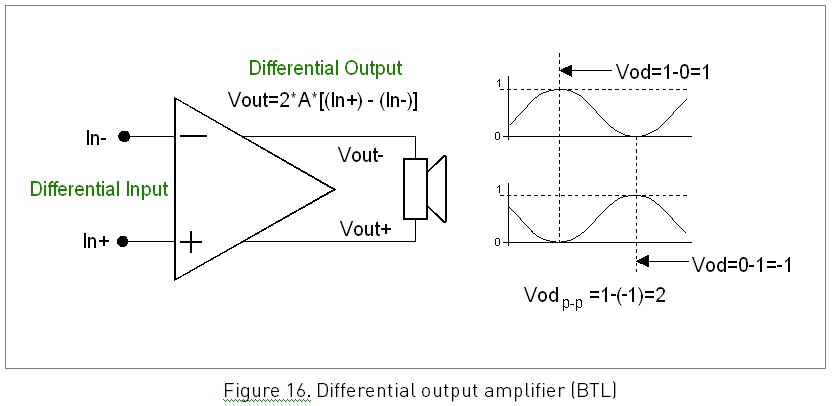
Audio Settings Application Note
80000NT10007a Rev.4 – 2010-10-04
The differential drive configuration offers several potential benefits:
Doubling the voltage swing on the load. The power to the load is 4 times the output
power of a single-ended output at the same voltage supply.
No output blocking capacitor is needed. Even if the differential outputs are biased at
half-supply, no DC voltage exists across the load.
Cost and PCB space are minimized. You don’t need the big blocking capacitors
(approximately from 33 μF to 1000 μF), which are expensive, heavy, and occupy wide
PCB area.
Low-frequency performance is limited only by the input network and speaker
response. There is no frequency limiting effect due to the high pass filter network
created by the speaker impedance and the coupling capacitance.
Less shielding is required from amplifier to load.
7.3.
Suggestions
The increase in output power assumes that the amplifier is not current limited or
clipped. Choose the right amplifier closed-loop gain not to generate excessive clipping,
which will damage high frequency transducers used in loudspeaker systems.
Reproduction forbidden without Telit Communications S.p.A. written authorization - All Rights Reserved
page 31 of 78


Audio Settings Application Note
80000NT10007a Rev.4 – 2010-10-04
8.
Electret Microphone
8.1.
Generality
The Microphone is an acoustic to electric transducer (sensor) that converts sound
pressure into an electrical signal. It is also called mike or mic.
The Electret is a stable dielectric material with a permanently-embedded static
electric charge, which will not decay for hundreds of years, due to the high resistance
of the material. Its name comes from electrostatic and magnet , drawing analogy to the
formation of a magnet by alignment of magnetic domains in a piece of iron.
The Electret Microphone (shortly ECM) is a type of condenser microphone whose
audio pickup section has a structure of a condenser consisting of a diaphragm and an
opposite back plate. Usually a very high voltage (tens or hundreds volts) should be
applied externally to polarize such a condenser. However, because the electric charge
can be maintained in a polymer film by the electret effect, thereby the polarizing direct-
current high voltage is eliminated. So it could offer the desired long-term stability and
ultra-flat frequency response.
8.2.
Principle of operation
The sound waves impinging on the diaphragm cause the capacitance between it and the
back plate to change in sympathy.
Because the capacitance is relatively small, the electrical impedance is high and
unmanageable; to overcome this, the condenser microphone incorporates a JFET to
transform the impedance to a lower level suitable for feeding an amplifier via screened
lead.
8.3.
Types
There are three ECM technologies, according to where the electret film is used:
Foil-type. The diaphragm itself is made of an electret polymer film. This is the most
common type, but offering also the lowest quality, since the electret material doesn't
make a very good diaphragm.
Back-type. An electret film is applied to the back plate of the microphone capsule
and the diaphragm is made of a superior, uncharged material.
Front-type. In this newer type, the back plate is eliminated from the design, and the
condenser is formed by the diaphragm and the inside surface of the capsule. The
Reproduction forbidden without Telit Communications S.p.A. written authorization - All Rights Reserved
page 32 of 78


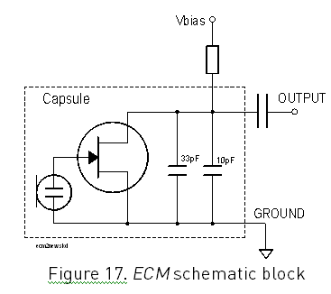
Audio Settings Application Note
80000NT10007a Rev.4 – 2010-10-04
electret film is adhered to the inside front cover and the metalized diaphragm is
connected to the input of the FET.
8.4.
Performance
The ECM is particularly useful in the hand held and telecommunications field because
it has the following advantages compared to the dynamic type:
flat frequency response extended both at low and high frequencies
immunity to vibration, due to the very low mass of the diaphragm
low supply voltage
low noise
long-term stability
smaller dimensions
Reproduction forbidden without Telit Communications S.p.A. written authorization - All Rights Reserved
page 33 of 78


Audio Settings Application Note
80000NT10007a Rev.4 – 2010-10-04
8.4.1.
Electrical Characteristics
The following table lists some typical ECM electrical characteristics.
Nominal sensitivity
-45dBV /1Pa (+/- 3dB)
rms
Line coupling
AC
Nominal Voltage
2V
Range of Using Voltage
(1÷10) V
Consumption Current
(150÷500 ) μA
Impedance
2,2KΩ
Signal to Noise Ratio
56dB @1KHz/1Pa (A curve)
EMI capacitor between terminals
10pF, 33pF
Table 5. Microphone electrical characteristics
8.4.2.
Differential Connection Advantages
Increase in CMRR. The differentially connected ECM does not improve CMRR alone.
CMRR is defined as the ratio of the common mode input / output. Thus, common mode
rejection is not a function of the ability to generate a differential output, but instead a
measure of how well an amplifier rejects a common mode input. The tracks between
the microphone and the codec are more important to CMRR than the way the signal is.
Useful signal. The signal level is 6dB higher.
SNR increase. The differentially connected ECM does not directly improve SNR
either. While it might be argued that since the signal is increasing by 6dB, this
improvement will also increase SNR, but this is not true. Since all condenser
microphones are inherently single-ended devices, self-noise is generated in series with
the signal output and both are referenced to ground. Therefore, converting the single-
ended signal to a differential output signal effectively amplifies the Signal and the
Noise equally, yielding no net gain in SNR.
EMI rejection. As with CMRR, converting a single-ended signal to a differential one
cannot improve EMI rejection because EMI is induced upon the tracks on the PCB. By
maintaining good PCB design techniques as discussed, EMI rejection is improved by
matching impedances to insure that EMI is applied by common mode to the differential
amplifier where it will be rejected.
Reproduction forbidden without Telit Communications S.p.A. written authorization - All Rights Reserved
page 34 of 78


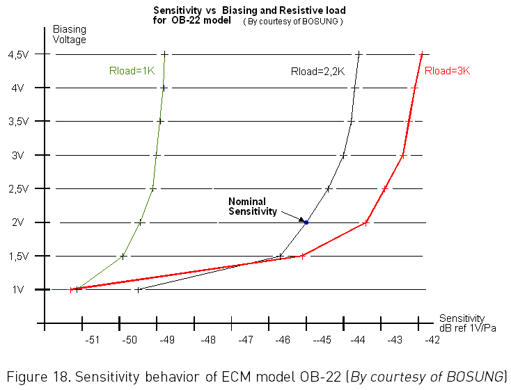
Audio Settings Application Note
80000NT10007a Rev.4 – 2010-10-04
8.4.3.
Internal Amplifier
Till now the maximum sensitivity available from ECMs has been -38dBV /1Pa. If higher
rms
level is requested, on the market you can find devices that have a low noise amplifier in
the same holder, whose gain is generally adjustable from 0dB to +20dB. But one more
track has to be added to your PCB because also the amplifier power supply is needed.
8.5.
Biasing Voltage
An ECM usually needs a biasing voltage to work properly: verify on microphone
manufacturer Data Sheet its characteristics that could be different from that listed on
table 5.
If you do not respect the load, voltage and current requirements, the performances
vary.
The figure 18 shows how External Load Resistor and Power supply affect the sensitivity.
Reproduction forbidden without Telit Communications S.p.A. written authorization - All Rights Reserved
page 35 of 78


Audio Settings Application Note
80000NT10007a Rev.4 – 2010-10-04
8.5.1.
Biasing Source
The microphone could be powered from the AFE itself or from a low noise external
source.
Being the microphone circuitry the more noise sensitive, its design and layout must be
done with particular care. Both microphone paths have been designed to implement
the balanced configuration; if the OEM circuitry is balanced too, then the common mode
noise typically generated on the ground plane is reduced.
However some customers strongly request the minus terminal of the microphone
grounded and also an unbalanced circuitry can be used for OEM application.
Likewise the amplifiers two different power supply concepts are involved for the
biasing:
unbalanced biasing
balanced biasing
8.5.2.
Reminder
The ECMs have a hot wire were the positive biasing must be connected. Usually it is
indicated by a plus (+) symbol or a red point ( ). If the polarity of the bias is reversed,
then the microphone will not work properly.
WARNING:
Be sure to respect the microphone biasing polarity.
8.5.3.
Unbalanced Biasing
The microphone powering refers to a common ground plane or the analog ground,
hence the supply might suffer on ground noise injection into the microphone signal.
Despite this method is always possible, it is not really recommended because it
requires the following:
a real star connection in the ground plane, not always easy to realize
a very strong low pass filter in the microphone supply, that means a small series
resistor (to have low dropout) and a very big capacitor.
Reproduction forbidden without Telit Communications S.p.A. written authorization - All Rights Reserved
page 36 of 78


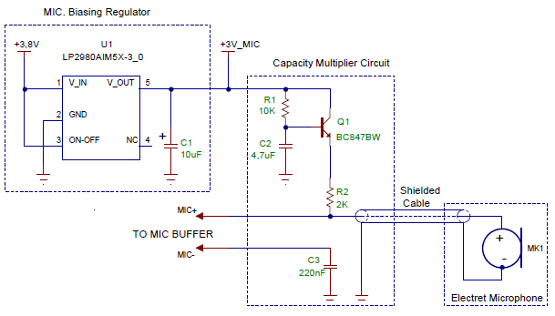
Audio Settings Application Note
80000NT10007a Rev.4 – 2010-10-04
8.5.4.
Practical Suggestions
With reference to figure 19, that is an example of the unbalanced microphone biasing
circuit, apply the following suggestions if it is possible:
get the supply biasing voltage from a dedicated voltage regulator (U1), in order to
eliminate the noise present on the power lines; this regulator can be the same for all
the audio sections.
drive the microphone by a capacitor multiply circuit (R1-Q1-C2)
use a shielded cable if the microphone is wire connected
capacitor C3 shall be ≥200nF otherwise the frequency response will be cut at
frequencies lower than 300Hz)
capacitor C3 must be placed close to the MIC_HF- or MIC_MT- pad or when
possible close to the shielded cable connector.
Figure 19. Example of unbalanced microphone biasing
Reproduction forbidden without Telit Communications S.p.A. written authorization - All Rights Reserved
page 37 of 78


Audio Settings Application Note
80000NT10007a Rev.4 – 2010-10-04
8.5.5.
Balanced Biasing
In this configuration, the microphone is not directly grounded but it is rather floating,
with two symmetrically split load resistors.
This method gives benefits for external noise coupling due to symmetry: the noise
coupling is only common mode signal and it is cancelled at the inputs of the low noise
amplifier.
We highly suggest the balanced configuration even if it means one more track; in fact
you need two active tracks, instead of one plus ground as in the unbalanced circuitry.
8.5.5.1.
Suggestions
With reference to the figure below, that is an example of the balanced biasing circuit,
apply the following suggestions :
get the supply biasing voltage from a dedicated voltage regulator (U1), in order to
eliminate the noise present on the power lines; this regulator can be the same for all
the audio sections.
drive the microphone by a capacitor multiply circuit (R1-Q1-C2)
use a twisted cable if the microphone is wire connected
split the nominal load in two halved value components
try to keep the sum of R2 and R3 near the Rload declared in the manufacturer Data
Sheet
Reproduction forbidden without Telit Communications S.p.A. written authorization - All Rights Reserved
page 38 of 78


Audio Settings Application Note
80000NT10007a Rev.4 – 2010-10-04
+3,8V
U1
+3V_MIC
LP2980AIM5X-3_0
Capacity Multiplier Circuit
1 V_IN
V_OUT
5
R1
10K
2 GND
Q1
3 ON-OFF
NC 4 +
C1
BC847BW
C2
10uF
4,7uF
Electret Microphone
R2
MIC. Biasing Regulator
1K
MIC+
+
TO MIC BUFFER
MK1
-
MIC-
R3
1K
Figure 20. Example of differential microphone biasing supply
Reproduction forbidden without Telit Communications S.p.A. written authorization - All Rights Reserved
page 39 of 78


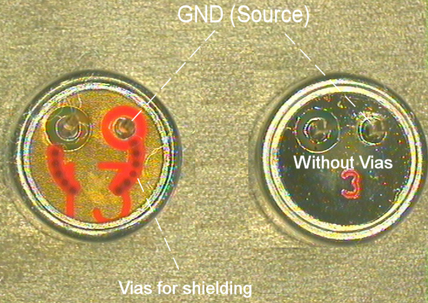
Audio Settings Application Note
80000NT10007a Rev.4 – 2010-10-04
9.
Input Paths Guide Lines
9.1.
Reminder
As discussed at paragraph 4, there are several configurations for the input audio paths,
but the best solution is the differential one, that uses 2 tracks to connect the
microphone to its amplifier.
It is highly recommended to keep the whole microphone paths balanced.
9.2.
Noise immunity
It is very important to have high noise immunity, because the frequency between bursts
is 216Hz and falls in audio bandwidth. Because of the RF rectification, the generated
disturbance becomes sometimes quite impossible to take off without strong shielding
of the audio part of the PCB.
The best microphones contain two small value capacitors inside (one for 900MHz and
the second for 1800-1900MHz band), which act as RF bypass to short-circuit the RF
frequency components to ground, avoiding rectification phenomena.
Not only, the “source” pin is directly connected to its shield, and a lot of ground vias
form a sort of shielded case.
When the screening action is not enough, you will hear a sort of noise we call Buzzing,
because it seems to be a bug with its buzz sound, whose level depends from TX power.
Figure 20 bis. At left the best shielded electret microphone.
Reproduction forbidden without Telit Communications S.p.A. written authorization - All Rights Reserved
page 40 of 78


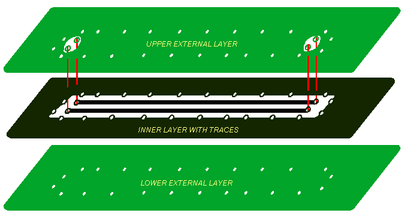
Audio Settings Application Note
80000NT10007a Rev.4 – 2010-10-04
9.3.
Practical suggestions
The AC coupling capacitors in the In+ track should also be used in the In- track.
Any shunt capacitors or series ferrite beads used for RF rejection should be applied
equally to both In+ and In- tracks.
Any bias resistors or load resistors needed for differential source should be
mirrored for both differential tracks.
Ground tracks or a ground plane should be placed close (ideally beneath) the
differential tracks. This provides a direct ground path for RF signals.
The biasing circuit and eventually the buffer can be designed in the same way both
for the internal and external microphones
If possible use balanced (differential) microphone connection
Keep the microphone tracks on the PCB and wires as short as possible.
If your application requires an unbalanced (single ended) microphone connection,
then keep the lines on the PCB balanced and "unbalance" the path close to the
microphone connector if possible.
For the microphone biasing voltage use a dedicated voltage regulator and a
capacitor multiply circuit.
Make sure that the microphone tracks in the PCB don't cross or run parallel to noisy
tracks (especially the power line)
use a rubber grommet to avoid the direct contact between microphone and its holder
as a good rule , the hole in front of microphone should have 1mm diameter
If possible put a ground trace connected to the ground plane by several vias all
around the microphone lines. It is advisable the use of “blind holes” as shown in the
next figure. This physical arrangement simulates the shielded of the traces on the PCB.
Figure 21. Example of “coaxial like” microphone realized by shielded tracks
Reproduction forbidden without Telit Communications S.p.A. written authorization - All Rights Reserved
page 41 of 78


Audio Settings Application Note
80000NT10007a Rev.4 – 2010-10-04
9.3.1.
HandsFree
When your application is working in an HandsFree system and the microphone is fitted
in the same box with the speaker:
try to have the maximum possible distance between them; if it is possible at least
7cm
if you use an omni-directional type (and this is the typical application ) please seal it
on the rear side (no back cavity) in order not to collect unwanted signals ; try to make
divergent the main axes of the microphone and speaker
if you use an external microphone amplifier, set the module to the minimum
possible gain
9.4.
Definitions
9.4.1.
Normal Spoken Condition
For a cellular phone, the normal spoken conditions take place when the talker mouth
is about 7cm far from the microphone. Under these conditions the voice will produce an
acoustic pressure of -4,7dBPa @1kHz on the microphone membrane.
Obviously during a call this level varies, according to the volume of the talker voice.
Usually you may apply the following rough rule of thumb to define the useful dynamic
range:
the strongest voice level condition is when the talker is screaming: the signal
increases by +20dB
the lowest voice level condition is when the talker is whispering: the voice level
decreases by –50dB.
These limits must be considered for designing the external microphone amplifier.
Reproduction forbidden without Telit Communications S.p.A. written authorization - All Rights Reserved
page 42 of 78


Audio Settings Application Note
80000NT10007a Rev.4 – 2010-10-04
9.4.2.
Sensitivity and electrical equivalent level
The Nominal Sensitivity is expressed in dBV/Pa or in dBV/μbar and could be defined as:
“the output voltage level for a specified acoustic stimulus under specific load
condition”
Because 0.1Pa = 1μbar, the difference between one measuring unit and the other is:
Δ=20 log 0.1= - 20dB as example: -40dV/Pa = -60dBV/μbar
10
Generally the nominal sensitivity is reported on Manufacturer Data Sheet.
9.4.3.
Microphone Electrical Level
Knowing the nominal sensitivity of a microphone, it is possible to calculate the voltage
level on its pins under “normal spoken” condition.
A microphone having the nominal sensitivity of -45dBV /Pa will produce an electrical
rms
equivalent signal at its pins:
Mic Level = (-45) + (-4.7) = -49.7 dBV
or Mic Voltage = 10 ( -49.7 / 20 ) = 3.3* 10 -3 V
rms
rms
9.5.
Microphone connections
The microphone could be connected whether directly or through a buffer amplifier to
the input lines of the module. In the first case the required gain will be set only in the
internal AFE amplifier stages; in the second case, the required gain will be split
between the external amplifier (G ) and the internal stages (G ) .
E
I
Again the external buffer amplifier can be fully differential or single ended
configured: where possible it is always preferable a fully differential configuration
(balanced). The buffering circuit shall be placed close to the microphone or close to the
microphone wire connector.
Reproduction forbidden without Telit Communications S.p.A. written authorization - All Rights Reserved
page 43 of 78


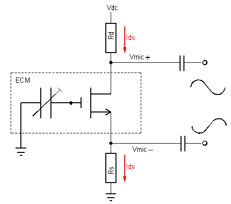
Audio Settings Application Note
80000NT10007a Rev.4 – 2010-10-04
9.5.1.
Coupling
When using microphones with codecs that utilize differential inputs, special attention
needs to be paid to the DC bias of the input signals. Since op-amps in differential
configuration amplify DC as well as AC signals, bias differences are important. In the
case of DC, common mode rejection means DC removal when the DC bias of the
differential input signals is the same.
However, a mismatch in bias levels can quickly lead to reduce dynamic range since the
output bias will be affected by the input bias difference.
Luckily, many codecs manufacturers provide amplifier biasing internally.
When internal biasing is used, DC matching is trivial. AC coupling both differential
inputs tracks removes DC bias from both tracks, leaving the codec to provide the
appropriate bias for best dynamic range. The figure below shows AC coupled
differential inputs connection.
Figure 22. Fully differential ECM ac-coupled output signals configuration
9.5.1.1.
Practical Suggestions
As previously explained, when the user application is a handsfree system, the
microphone and the speaker are far from module, driven by external amplifiers. In
these environments when designing the external microphone amplifier you must take
into account the voice attenuation, due to the distance between the talker and the
microphone itself.
You must consider that ambient noise will be picked up.
Reproduction forbidden without Telit Communications S.p.A. written authorization - All Rights Reserved
page 44 of 78


Audio Settings Application Note
80000NT10007a Rev.4 – 2010-10-04
To overcome these problems, it is preferable to set the gain of the microphone 10dB
lower with respect to the calculated value for a nominal sensitivity. An increased voice
volume of the talker, which will speak louder because of the ambient noise, will
compensate the corresponding reduction in signal level.
Usually the distance between the microphone and the talker in a car cabin is 40/50cm;
in these conditions the attenuation can be considered as a thumb rule around 20dB.
The same considerations can be made for the HeadSets having the microphone on the
earpiece cable (like a mobile phone).
The HeadSets having the microphone sustained close to the mouth can be threatened
as a HandSet.
9.5.1.2.
Losses Compensation
The voice signal, that in the "normal spoken” conditions produces on the microphone
membrane an acoustic pressure of -4,7dBPa at 1kHz, will have a further attenuation of
20dB due the 50cm distance. A microphone having a sensitivity of -45dBV /Pa will
rms
produce a signal:
MicLevel = (-45) + (-4.7)-20 = -69.7 dBV
rms
equivalent to :
MicVoltage = 10 ( -69.7 / 20 ) = 0,33* 10 -3 V
rms
If the external amplifier gain G =+10dB (3 times), at the normal spoken conditions the
E
signal will be:
Mic_Input Level = 0,33* 10 -3 * 3=1* 10 -3 V
rms
at the AFE input lines , resulting 3 times lower than the nominal as suggested .
These considerations are valid for both Mic_MT and Mic_HF input lines, if the same
configuration is implemented.
9.5.2.
Maximum Gain
When you define the gain of the microphone path, keep in mind that the maximum
differential level to AFE input lines must be ≤ 1,03V /-8,67dBV (see paragraph 3.1),if
pp
the internal gain G is set to 0dB.
E
We have to consider two different configurations: with or without external amplifier.
Reproduction forbidden without Telit Communications S.p.A. written authorization - All Rights Reserved
page 45 of 78


Audio Settings Application Note
80000NT10007a Rev.4 – 2010-10-04
9.5.2.1.
With External Amplifier
Let’s calculate the external amplifier gain G at strongest voice level condition and
E
internal amplifier gain G =0dB:
I
MicLevel 20
dB G G 76
,
8
7
,
49 20 G 0
E
I
dBV
E
76
,
8
then G
7
,
49 20 76
,
8
94
,
20
E
dB
dB G = +20dB
available by commercial values
E
9.5.2.2.
Without External Amplifier
Let’s calculate the internal amplifier gain G at strongest voice level condition and:
I
MicLevel 20dB G 76
,
8
7
,
49 20 G
I
dBV
I
76
,
8
then G
7
,
49 20 76
,
8
94
,
20
I
dB
dB G = +21dB
set by dedicated AT command
I
9.5.3.
Single Ended (Unbalanced) External Amplifier
The next figure shows a possible single ended input microphone amplifier
BALANCED MICROPHONE BUFFER +10dB
+3V
+3V
C716
100nF
R714
47K
U701
TS3V912ID
R708
DECOUPLING
10K
CAPACITORS
C709
R711
100nF
15K
MIC+
C719
R715
100nF
47K
100nF
C714
FROM
1nF
MIC.
C727
TO MODULE
+3V
C723
100nF
U701
TS3V912ID
MIC-
+3V
100nF
C715
R720
R717
R718
10K
47K
470K
R719
5,6K
C720
R715 C725
100nF
47K
100nF
3,3nF
C726
Figure 23. Example of Single ended input microphone amplifier
Reproduction forbidden without Telit Communications S.p.A. written authorization - All Rights Reserved
page 46 of 78


Audio Settings Application Note
80000NT10007a Rev.4 – 2010-10-04
9.5.3.1.
Practical Suggestions
The gains of the two amplifiers are given by the formulas:
719
R
711
R
Gain
BUFFER
INVERTING
NOT
1
Gain
BUFFER
INVERTING
720
R
708
R
Assigning half of overall gain to each amplifier, you will obtain the requested one
because of doubling the microphone signal path; in fact by the use of two amplifiers
(the upper as “inverting” and the lower as “not inverting” configuration) we obtain an
additional +6dB gain (2 times).
Remember: the “not inverting“ amplifier section gain shall not be less than 1.
The amplifier overall gain can be modified changing the value of resistor
R719/R720/R711, and the capacitors C726/C727as a consequence.
It is advisable to change R708 only if you have difficulty to find a commercial value for
R711; in this case change R708 as little as possible because it acts as the input
resistance.
The buffer bandwidth at -3dB shall be 4KHz.
Considering C725 >> C726, the -3dB bandwidth is given by the approximated
formula:
1
1
.
freq
[Hz]
2 *R
*
719 C726 2 *R
*
711 C727
first set C276 and C277 at commercial values; then choose R719 and R711 nearest to
the commercial values
The biasing for the inverting section is given:
by the series divider R714-R715 plus the capacitor C719 , needed to filter the noise
that could be coupled to that divider.
The biasing for the “not inverting” section is given:
by the series divider R715-R717 plus the capacitor C720 , needed to filter the noise
that could be coupled to that divider , through a series resistor R718 .
This schematic does not include the required biasing circuitry for the microphone
Decouping capacitor on MIC- line is not needed (see figure 19, capacitor C3)
Reproduction forbidden without Telit Communications S.p.A. written authorization - All Rights Reserved
page 47 of 78


Audio Settings Application Note
80000NT10007a Rev.4 – 2010-10-04
9.5.3.2.
Calculus example
Let’s assume that:
you are developing a HandsFree equipment
your microphone have a sensitivity of -45dBV /Pa in "normal spoken" conditions at
rms
acoustic pressure of -4.7dBPa
you want to use the 2nd differential microphone path (“Mic_HF” input lines)
the buffer amplifier have a gain G =+20dB (10 times)
E
the desired cutoff frequency of the buffer amplifier is f =4KHz
c
the microphone is about 50cm far from the mouth of the talker
Due to the distance between the mouth and microphone the signal loss will be 20dB
loss.
As calculated in paragraph 9.5.1.2 the electrical level output will be:
MicLevel = (-49.7) + (-20) = -69.7 dBV
or MicVoltage = 10 ( -69.7 / 20 ) = 0,33* 10 -3 V
rms
rms
In the same paragraph it is suggested to increase the level to 1mV
by the external
rms
buffer, which will be designed with a gain:
Vinput _ lines
110 3
G
3
E
or G +10 dB
MicVoltage
33
,
0
103
E =
To calculate the resistor values it must be kept in mind that “balancing the line will
double the signal” and hence +6dB are already added.
Therefore the buffer stage must gain only 1,5 times or G =+3,52dB.
E
Keeping the input resistance =10KΩ, the corresponding values for the resistors on the
buffer could be:
R711 = G * R708= 1.5*10 =15kΩ
E
R719 = (G -1) * R720 = (1.5 -1)*10 =5kΩ
E
The commercial values of 15kΩ and 5.6kΩ could be used.
As a consequence of the assigned resistor values, the nominal values of C726 and C727
should be:
C726= 1/ (2π*4000*R719)= 7.10 *10 -9 F
C727= 1/ (2π*4000*R711)= 2,65 *10 -9 F
Reproduction forbidden without Telit Communications S.p.A. written authorization - All Rights Reserved
page 48 of 78


Audio Settings Application Note
80000NT10007a Rev.4 – 2010-10-04
rounded off at 6,8nF (f =4181Hz ) and 2,7nF (f =3931Hz) commercial values.
cl
cu
9.5.4.
Fully Differential (Balanced) Buffering
The next figure shows a possible fully differential input amplifier.
This circuit has a gain G 15 (almost +24 dB) and could be applied both to “Mic_MT
E =
“ and “Mic_HF” input lines. The gain adjustment shall be done by changing the
resistors R604 and R606 and as a consequence the capacitors C636 and C637 to
maintain the bandwidth 150-8000Hz (at -3dB).
If the required value for R604 and R606 is not a standard one, you can change R605 and
R607 as little as possible because they act as the input resistances.
FULLY BALANCED MICROPHONE BUFFER G=+24dB
+3V
+3V
C618
100nF
R616
47K
U602
TS3V912ID
R605
10K
DECOUPLING
CAPACITORS
R604
C608
150K
100nF
C627
R615
100nF
47K
100nF
C602
FROM
100pF
MIC.
C637
TO MODULE
+3V
100nF
U602
C603
TS3V912ID
R607
10K
100nF
C609
R606
150K
100pF
C636
Figure 24. Example of the fully differential microphone amplifier
Reproduction forbidden without Telit Communications S.p.A. written authorization - All Rights Reserved
page 49 of 78


Audio Settings Application Note
80000NT10007a Rev.4 – 2010-10-04
The buffer gain is given by the formula:
604
R
606
R
Gain
605
R
607
R
The C636 and C637 capacitors are placed in order to cut off the gain at higher
frequencies than the transmitted GSM band; the cutoff frequency (-3dB) should be
8000Hz in order to have -1dB at 4KHz.
The cutoff frequency is given by the formula:
1
1
fcu
[Hz]
2 * 604
R
*C637
2 * 606
R
*C636
9.5.4.1.
Calculus example
Let's assume that:
you are developing a HandSet application
you have a microphone with a sensitivity of -50dBV /Pa in "normal spoken"
rms
conditions at acoustic pressure of -4.7dBPa
you want to use the 1st differential microphone path (“Mic_MT” input lines)
the buffer amplifier have a gain G =+24dB (15 times)
E
the desired cutoff frequency of the buffer amplifier is f =4KHz
c
The output level from the microphone will be calculated as described in the paragraph
8.4.3:
MicLevel = ( -50) + (-4.7) = -54.7 dBV
or MicVoltage = 10 ( -54.7 / 20 ) = 1.84* 10 -3 V
rms
rms
When the talker is screaming, the microphone signal will increase by 20dB (10 times)
to 18,4mV
rms.
Due to external amplifier, the level at the “Mic_MT “ input lines will be:
Mic _ MT MicVoltage G
,
18 4 10 3
15 276mV
E
rms
lower enough respect the maximum differential input voltage of 1,03V /365mV as
pp
rms
listed at paragraph 3.1 .
Reproduction forbidden without Telit Communications S.p.A. written authorization - All Rights Reserved
page 50 of 78


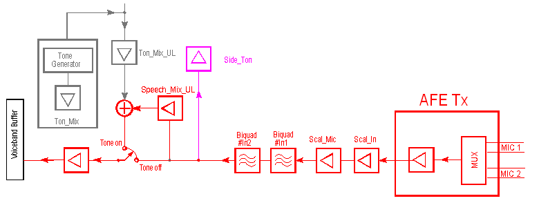
Audio Settings Application Note
80000NT10007a Rev.4 – 2010-10-04
Choosing the input resistance R605 = R607=10kΩ, we will obtain the nominal values for
the feedback resistors of the buffer:
R605 = R607 = G * R607= G * R605 = 10*15kΩ = 150kΩ
E
E
corresponding to available commercial values .
As a consequence the values of the capacitors C636 and C637 shall be:
C636=C637= 1/ (2π*4000*R606)= 265 *10 -12 F
A commercial value of 270pF gives a cutoff frequency of 3931Hz, with an error less than
1,8%.
9.5.5.
AFE Mic GAIN PARAMETERS
The differential input signal from the microphone passes a low noise amplifier with
gain settings ranging from 0 to +42dB. Gains of the input lines can be adjusted
separately, so that a maximal degree of flexibility is achieved, by dedicated AT
commands described at paragraph 11.7
9.5.6.
Transmit Block Diagrams
Figure 25 . GM862, GE863 GE/GC864-QUAD/PY Families TX section principle schematic diagram
Reproduction forbidden without Telit Communications S.p.A. written authorization - All Rights Reserved
page 51 of 78


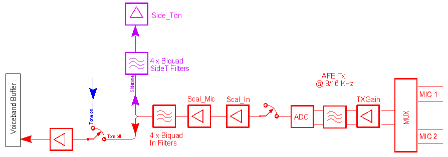
Audio Settings Application Note
80000NT10007a Rev.4 – 2010-10-04
Figure 25bis . GE/GL865 and V2 Familyeis TX section principle schematic diagram
Reproduction forbidden without Telit Communications S.p.A. written authorization - All Rights Reserved
page 52 of 78


Audio Settings Application Note
80000NT10007a Rev.4 – 2010-10-04
10.
Output paths guidelines
10.1.
Reminder
As suggested at paragraph 4, the differential configuration (BTL) is the best
implementation for the internal output buffer amplifiers, even if it needs 2 tracks to the
load.
Obviously you must respect the electrical characteristics listed at paragraph 4.2.
10.2.
Practical suggestions
All the designs shall comply with the following guidelines:
Where possible use differential configuration (BTL) circuitry, to achieve the
maximum power output from the device
Keep the output tracks on the PCB and wires to the transducers as short as
possible
Make sure that the output tracks in the PCB don't cross or run parallel to noisy
tracks (especially the power line)
The cable to the speaker shall be a twisted pair with both the lines floating for
the differential output configuration, shielded to ground for the single ended
output one.
If you want to implement a single ended output configuration, that directly
drives the load without any external amplifier, leave one of the two output lines
open and use only the other referred to ground. Remember that in this case:
a) the output power is 4 times lower than the differential circuit and may not be
enough to ensure a good voice volume.
b) you must use a big decoupling capacitor to the load , and this means more cost
and wider PCB .
The I/O of the PCB should have a noise filter close to the connector, to filter the
high frequency GSM noise. The filter can be a π type formed by an inductor of
39μH and 2 capacitors, one of 39pF (0603 case) and the other of 1nF (0603 case).
Reproduction forbidden without Telit Communications S.p.A. written authorization - All Rights Reserved
page 53 of 78


Audio Settings Application Note
80000NT10007a Rev.4 – 2010-10-04
10.3.
Mini Speaker characteristics
Generally both HandSet and Portable HandsFree use mini-speaker. In the below table
you can find the main electrical suggested characteristics for such a transducers.
Rated Input Power
5mW
Maximum Input Power
20mW
Coil Impedance
32 5 @ 1kHz
SPL
953 dB @ 1KHz/1mW sine wave
Resonance frequency (Fo)
< 350Hz
Useful Bandwidth
Fo ÷ 8000 Hz @ -3dB
Table 6. Mini-speaker electrical characteristics
10.4.
AF Power Requirements
There are several transducers that could be connected to output lines, but the various
designs can be referred to three main categories, with different power requirements:
handset
portable handsfree
fixed handsfree (car kit/speakerphone)
10.4.1.
HandSet and Portable HandsFree
These devices have one mini-speaker inside that needs only few mW of driving power.
They can be directly drained from the Telit modules, provided a suited speaker is used,
offering the cheaper and simpler solution, which will be adopted in most of the
customer designs.
10.4.2.
Fixed HandsFree (car kit/speakerphone)
These devices use a speaker that generally has a low resistive load and needs up to 5-
10W of driving power, available only by external power amplifiers.
Reproduction forbidden without Telit Communications S.p.A. written authorization - All Rights Reserved
page 54 of 78


Audio Settings Application Note
80000NT10007a Rev.4 – 2010-10-04
10.5.
Speaker Connections
Because the M2M modules offer output balanced lines, when the differential
configuration is implemented these output lines should be used to drive directly a
speaker or as inputs to an external power amplifier. In such a way a higher common
mode rejection ratio is obtained, reducing the GSM current bursts noise on the speaker
output.
At low power constraints, you have two possibilities to connect the speaker: directly to
module internal buffer amplifiers or through an external amplifier.
The choice will be made considering cost and performance, which generally clash.
At high power constraints, you must use an external power amplifier to boost the
module output.
10.5.1.
Direct connection
10.5.1.1.
HandSets and Portable HandsFree
The direct connection is often the more effective cost solution, reducing the number of
components to the minimum. But with some limitations:
the speaker characteristics has to be almost exactly the suggested ones, otherwise
the power output may be reduced (speaker impedance bigger than 16Ω) or the output
amplification stage may be damaged (speaker impedance lower than 15Ω) .
Only for GE865 chip could be used a speaker which impedance is ≥ 8Ω. In this case,
care has to be taken to not overload it, reducing the output power at high ambient
temperatures.
the reduced output power capability may not be enough for some particular
applications.
10.5.1.2.
Fixed HandsFree
These equipments require greater output:
speakerphone needs at least 1W
car kit needs at least 5W
Therefore the direct connection is not allowed.
Reproduction forbidden without Telit Communications S.p.A. written authorization - All Rights Reserved
page 55 of 78


Audio Settings Application Note
80000NT10007a Rev.4 – 2010-10-04
10.5.2.
External Amplifier
10.5.2.1.
HandSets and Portable HandsFree
In this case the “EAR_MT” or“EAR_HF” lines from the modules should be AC coupled
with a ceramic capacitor of 100nF (or bigger).
The figure below shows the principle schematic of a differential configuration.
CF
RF
CS
RS
100nF
EAR_MT+
EAR_OUT
U1
RS
EAR_MT-
100nF
Vcc
CS
R4
RF
100K
CF
R5
C1
100K
Figure 26. Differential Output Amplifier principle schematic
RF
The resulting gain is: Gain
RS
1
1
With corner frequencies : fcl
[Hz] fcu
[Hz]
2 *RS*CS
2 *RF*CF
Reminding that:
1
1
X
X
C1
C1
and
RF
2 * fcl * 1
C
C1
2 X * fcl *
*
1
.
0
RF
C1
Reproduction forbidden without Telit Communications S.p.A. written authorization - All Rights Reserved
page 56 of 78


Audio Settings Application Note
80000NT10007a Rev.4 – 2010-10-04
The figures 27 and 28 show the possible schematic of two Audio Power Amplifiers
external to AFE, that have a mute control (SHUTDOWN pin) in order to turn it off while
the device is not sending signal to the output; in this way the amplifier background
noise is cut off ,avoiding to be audible during idle conditions .
Some amplifiers require a low impedance load at high frequency in order to avoid auto
oscillation; this can be made with a capacitor in series with a resistor inserted between
output lines and ground (box Optional in the figure 27)
When designing your application, remind to provide an adequate bypass capacitor to
the amplifier, placing it close to the power input pin of the IC, to have the shortest
traces.
C412
1nF
Vcc
R404
22K
R406
C145
15K
100nF
5
U401
4
EAR_MT- /EAR_HF-
VC1
IN-
6
3
VDD
IN+
R407
EAR_MT+ /EAR_HF+
To Speaker
7
2
15K
100nF
GND
BYPASS
R410
C146
22K
8
1
VC2
SHUTDOWN
C414
C408
+
1nF
1uF
C421
100nF
LM4862MX
Optional
100nF
100nF
Vcc
OFF
ON
15
15
Figure 27. Example of 0.7W Audio Power Amplifier
Reproduction forbidden without Telit Communications S.p.A. written authorization - All Rights Reserved
page 57 of 78


Audio Settings Application Note
80000NT10007a Rev.4 – 2010-10-04
+5V
C1
1uF
7
VDD
C1
Ri
100nF
8
2
EAR_MT+/EAR_HF+
VO2
IN-
4ohm
LM4670 ITL
C2
SPEAKER
Ri
100nF
5
3
EAR_MT-/EAR_HF-
VO1
IN+
1
SDN
GND
GND
4
6
+5V
ON
OFF
Figure 28. Example of 3W Audio Power Amplifier
10.5.2.2.
Practical suggestions
As mentioned before, you must use an external audio power amplifier to drive the
speakerphones or car kit equipments.
The design of such amplifier shall comply with the following guidelines:
The input to the external amplifier could be taken whether from the “Ear_MT” audio
path or “Ear_HF”
The amplifier shall have a gain of (30÷40)times/(29÷32)dB to provide the desired
output power of 5-10W
If the amplifier has a fixed gain, then its output can be adjusted to the desired value
by reducing the input signal by AT+CLVL volume command of the M2M modules
the amplifier will have a mute control to achieve the following improvements: when
not in conversation the background noise is eliminated and power is saved
the amplifier and the modules power supply voltages should be decoupled as much
as possible, by either keeping separate wires and placing bypass capacitors of
adequate value close to the amplifier power supply input pads
the biasing voltage of the amplifier shall be stabilized with a low ESR capacitor (e.g.
Tantalum one) of adequate value.
Reproduction forbidden without Telit Communications S.p.A. written authorization - All Rights Reserved
page 58 of 78


Audio Settings Application Note
80000NT10007a Rev.4 – 2010-10-04
Figure 29 shows an example of the fully differential car kit amplifier.
+12V
2
TDA894SF-N1
VCC
C7
R2
OUT-
100nF
10K
1
5
EAR_MT+/EAR_HF+
IN-
R1
C5
SPEAKER
15K
1,5nF
4
EAR_MT-/EAR_HF-
8ohm
IN+
3 OUT+
10K
100nF
C6
R3
+12V
7
STANDBY
MODE
6
SVR
R4
GND
MUTE
10K
8
+
+
C1
C2
C3
C4
R5
100nF
1000uF
10uF
100nF
ON
10K
Figure 29. Example of 6W Audio Power Amplifier
Reproduction forbidden without Telit Communications S.p.A. written authorization - All Rights Reserved
page 59 of 78


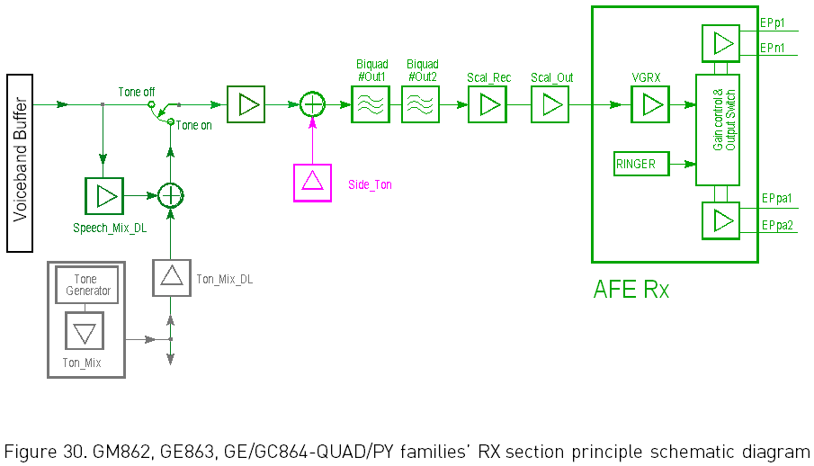
Audio Settings Application Note
80000NT10007a Rev.4 – 2010-10-04
10.6.
AFE EAR Gain Parameters
By dedicated AT commands described at paragraph 12.7, the gains of the individual
output lines can be adjusted separately so that a maximal degree of flexibility is
achieved.
The gain is normalized to 0dBFS that means 3.7V /differential and 1,85V /single-
pp
pp
ended.
10.6.1.
Receive Block Diagrams
Reproduction forbidden without Telit Communications S.p.A. written authorization - All Rights Reserved
page 60 of 78


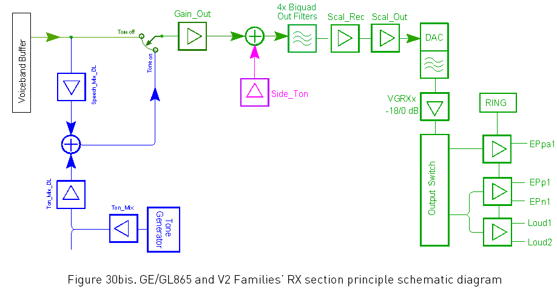
Audio Settings Application Note
80000NT10007a Rev.4 – 2010-10-04
Reproduction forbidden without Telit Communications S.p.A. written authorization - All Rights Reserved
page 61 of 78


Audio Settings Application Note
80000NT10007a Rev.4 – 2010-10-04
11.
The DTMF detection problem
The standard detection algorithms are not able to recognize the DTMF components
sent through a GSM voice channel by the application of the customer.
11.1.
DTMF signal characteristics
The Dual Tone Multi Frequency (DTMF) signal is composed by two frequencies as
reported in the following table:
High Group
Low
1209 1336 1477
Group
Hz
Hz
Hz
697 Hz
1
2
3
770 Hz
4
5
6
852 Hz
7
8
9
941 Hz
*
0
#
Table 7. DTMF frequencies
A decoder will give the correspondent digit after detecting the two carrier frequencies
according to the table. In order to detect and distinguish the pair of frequencies sent,
the common algorithms require usually the total power level of unwanted frequencies
to be at least 20dB below the lowest frequency signal with a signal to noise ratio
greater than 23dB.
Reproduction forbidden without Telit Communications S.p.A. written authorization - All Rights Reserved
page 62 of 78


Audio Settings Application Note
80000NT10007a Rev.4 – 2010-10-04
11.2.
DTMF generation
11.2.1.
First scenario
Responding to the command AT+VTS, the module sends a command to the network
infrastructure to generate on the other audio party the correspondent DTMF signal.
The DTMF tone duration can be controlled partially by the module since it sends a
"start playing tone" request and a "stop playing tone" request and these can be
specified by the application controlling the mobile, except from time shifts introduced
by the network.
The network infrastructure generates this tone perfectly aligned with specifications
requirement, without introducing problem during recognition.
11.2.2.
Second scenario
The DTMF signal is generated by a separated source, typically a landline (corded)
phone, and sent to the input lines of the module (Uplink path). The frequencies couples,
sent on the voice channel, are digitized, encoded and sent by the digital transmission
system.
In the receiving device the signal would be reconstructed, but since the digital
transmission of the voice channel is compressed and optimized for voice, this
reconstruction depends on the kind of voice compression used for the transmission,
and generally will not perfectly match the original signal.
There are four main types of compression for the voice channel and only the Full Rate
one has no distortion, while the other three offer a different trouble level (see figures
31-32-33):
Half Rate. Problems arise because of the incoming signal containing the test signal
plus other frequencies, with an amplitude up to –10dBc;
Enhanced Full Rate. Bigger problems arise in decoding the incoming signal ,that
contains the test signal plus spurious frequencies added by the voice compression
process, whose amplitude could be very high, up to –10dB . Not only, the two useful
c
components vary continuously theirs amplitude.
Adaptive Multi Rate. This is the worst case, because it is a mixed one.
Full Rate .In this case the incoming signal is stable and clean, and there is no
problem to decode it since it respects the DTMF requirements. But it is not applicable
to limit the voice coding to only Full Rate , because the network decides itself which
coding to be used.
Reproduction forbidden without Telit Communications S.p.A. written authorization - All Rights Reserved
page 63 of 78


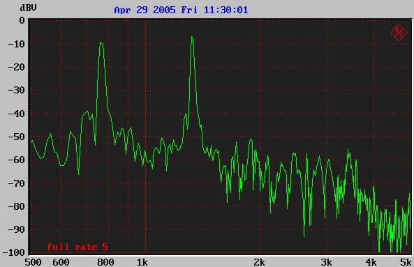
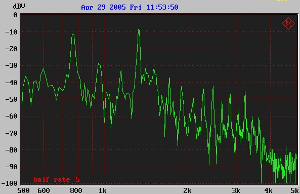
Audio Settings Application Note
80000NT10007a Rev.4 – 2010-10-04
Figure 31. DTMF 5 dialing with Full Rate compression type.
Figure 32. DTMF 5 dialing with Half Rate compression type.
Reproduction forbidden without Telit Communications S.p.A. written authorization - All Rights Reserved
page 64 of 78


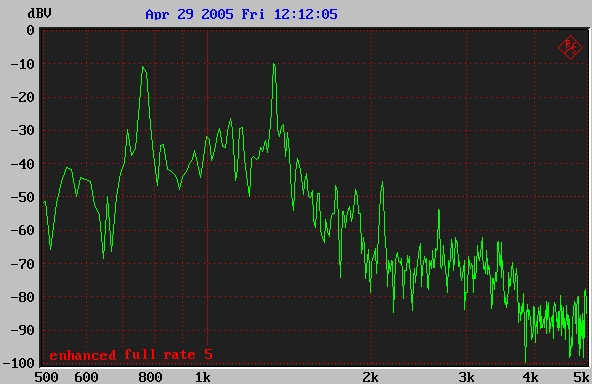
Audio Settings Application Note
80000NT10007a Rev.4 – 2010-10-04
Figure 33. DTMF 5 dialing with Enhanced Full Rate compression type.
11.3.
Suggestions
After these considerations we suggest the following:
do not generate DTMF signal externally to send them through the voice channel
send DTMF signal by the command AT+VTS
set the SIDETONE OFF during DTMF signal sending
If you need to implement the second scenario, accepting the distortion due to voice
channel compression, don’t forget that the maximum input lines level is:
1,03Vpp/365mV @ MicGain=0dB
rms
In fact higher DTMF signal levels cause saturation of the AFE amplifier stages, with
further unwanted harmonic components generation.
Reproduction forbidden without Telit Communications S.p.A. written authorization - All Rights Reserved
page 65 of 78


Audio Settings Application Note
80000NT10007a Rev.4 – 2010-10-04
12.
Echo cancellation
12.1.
Generality
HandsFree systems are equipments that can be used without hands, that is without
limiting the movement of the user during a call. They are necessary in several
environments:
in a car’s dashboard, while driving
at the office, during audio or video conferences
in an elevator, during emergencies
in open spaces, at the entrance of the parking facilities
These systems are mainly disturbed by the acoustic echo signal that originates from
the sound propagation between the loudspeaker and the microphone of a GSM mobile
station, sent back to the far user with a significant reduction of the quality.
To overcome this phenomenon, an Acoustic Echo Controller (called AEC in the rest of
the document) is implemented in the Firmware of the Baseband chip.
12.2.
Definition
AEC is voice-operated device used for the purpose of eliminating acoustic echoes
and protecting the communication from howling due to acoustic feedback from
loudspeaker to microphone.
Near-end: anything related to the local user. E.g.: the Near-end speaker is the
speaker of the HandsFree system in a car
Far-end: anything related to the external user. E.g.: the Far-end speaker is the
speaker of the PSTN user.
12.3.
Theory
Acoustic coupling between loudspeaker and microphone is an important and potentially
negative feature in phones. A mobile phone will transmit via the microphone the direct
signal coming from the near-end speaker, the signal coming from the loudspeaker and
noise.
Acoustic echo is formed when the sound emitted by a HandsFree loudspeaker gets
reflected from the walls , ceilings, floor, furniture, people, etc. back to the HandsFree
microphone. Sound pressure level decreases with each reflection.
Reproduction forbidden without Telit Communications S.p.A. written authorization - All Rights Reserved
page 66 of 78


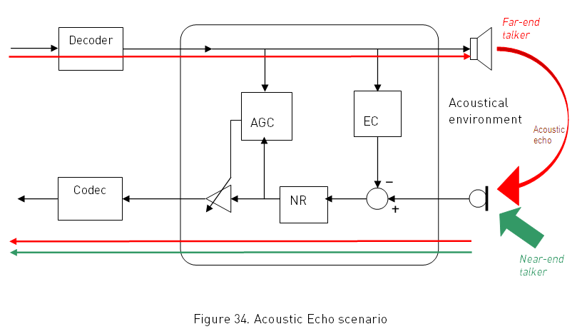
Audio Settings Application Note
80000NT10007a Rev.4 – 2010-10-04
12.3.1.
AEC Scenario
The AEC implementation consists of 3 modules:
a scalable, completely time domain based, Block-NLMS (normalized least mean
square) algorithm for Echo cancellation EC
an automatic gain control AGC (for the transmission path only)
an additional Noise Reduction NR (for the transmission path only)
All algorithms, EC, AGC and NR are able to operate independently of each other,
although both EC and AGC are necessary to yield sufficient echo suppression; NR can
work independently.
Reproduction forbidden without Telit Communications S.p.A. written authorization - All Rights Reserved
page 67 of 78


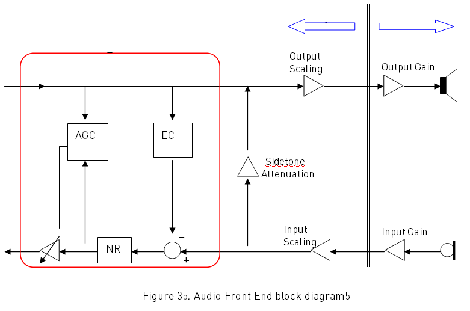
Audio Settings Application Note
80000NT10007a Rev.4 – 2010-10-04
12.3.2.
AFE ECHO block diagram
The audio front end consists of the AEC subsystem, digital scaling and analogue gains.
The AEC behaviour is configurable by means of 9 parameters, which are settable with a
dedicated custom AT command 1.
Overall Input and Output Gains are to be considered as the cascade of internal
amplifiers (“Output and Input Scaling” blocks), which gain is settable by AT command 1,
plus any other user implemented external amplifiers (“Input and Output Gain” blocks).
1 See also paragraph 12.5
Reproduction forbidden without Telit Communications S.p.A. written authorization - All Rights Reserved
page 68 of 78


Audio Settings Application Note
80000NT10007a Rev.4 – 2010-10-04
NOTICE:
Digital scaling must be used as a way to finely tune gains and correct the chain overall
gain.
Due to the original setting of HS/MT and HF blocks in the cellular phones (see
paragraph 2.2.1), the input digital gain in HF is 3dB higher than HS, while the output
digital gain in HF is 3dB lower than HS.
12.4.
AEC and Audio editable parameters
The following table lists the AEC parameters and Audio parameters that can be
modified by AT commands. For further detailed description please refer to the AT
Commands Reference Guide, code 80000ST10025a.
PARAMETER
RANGE
STEP
Digital Input Scaling
(-6÷ +6) dB
1dB
AUDIO Digital Output Scaling
(-6÷ +6) dB
1dB
(0÷ +24) dB
1dB
Sidetone Attenuation
-1 = OFF
0 = slow
Adaption Speed
1 = medium
2 = fast
FIR Filter Length
(10÷50) ms
1ms
Power Relation RX->TX
(-90÷ +90) dB
1dB
Noise Max Attenuation
(6÷42) dB
6dB
0=lower weight
AEC
Noise Weighting Factor Band …
300-500Hz
9=higher weight
0=lower weight
Noise Weighting Factor Band …
500-4000Hz
9=higher weight
Gain Additional Attenuation
(0÷ +90) dB
1dB
Gain Minimum Attenuation
(0÷ +90) dB
1dB
Gain Maximum Attenuation
(0÷ +90) dB
1dB
Table 8. Editable Audio and AEC parameters
Reproduction forbidden without Telit Communications S.p.A. written authorization - All Rights Reserved
page 69 of 78


Audio Settings Application Note
80000NT10007a Rev.4 – 2010-10-04
12.4.1.
EC module
Echo Canceller is based on a FIR filter, and this filter reflects the inverse of the
acoustic coupling between speaker and microphone. It can be controlled by the
following set of parameters.
Adaptation Speed. It represents the capacity of the algorithm to adapt to the variation
of echo characteristics ; higher value means faster adaptation but less accurate
convergence and vice versa.
FIR Filter Length. It represents the impulse response length to build the estimated
filter, thus it’s the maximum cancelable echo delay.
Power Relation RX →TX. This value is used to tell the algorithm about the real world
signal power relation between speaker and microphone and their acoustic coupling.
12.4.2.
AGC module
AGC is based on the current signal power relation between RX and TX, and decision is
made whether to attenuate or not the TX signal so this block can actually be called
“automatic reduction of gain”. The amount of the attenuation is controlled by the
following set of parameters.
Additional Attenuation. It represents the additional attenuation added to the
attenuation calculated by the AGC.
Minimum Attenuation.It represents the minimal attenuation in spite of lower
calculated attenuation.
Maximum Attenuation. It represents the maximum attenuation in spite of higher
calculated attenuation.
12.4.3.
NR module
NR filters background noise introduced by the environment (e.g.: noise of car engine)
and the residual noise from the impulse response not removed by the echo canceller,
based on the spectral weighting algorithm implemented with sub-bands from 300Hz to
4000Hz, which can be controlled by the following set of parameters:
Noise Max Attenuation. It represents the maximum attenuation that can be
introduced by the NR algorithm.
Noise Weighting Factor Band 300-500Hz. A higher value causes better noise
reduction but also a higher distortion of the speech signal.
Noise Weighting Factor Band 500-4000Hz.A higher value causes better noise
reduction but higher distortion of the speech signal.
Reproduction forbidden without Telit Communications S.p.A. written authorization - All Rights Reserved
page 70 of 78


Audio Settings Application Note
80000NT10007a Rev.4 – 2010-10-04
12.5.
AEC and Audio parameters AT Commands
The following table lists the AT commands available for audio parameters:
AT Commands
Description
AT+CLVL
Loudspeaker Volume Level
AT#SHFEC
HandsFree Echo Canceller
AT#HFMICG
HandsFree Microphone Gain
AT#HSMICG
HandSet Microphone Gain
AT#SHFSD
Set HeadSet Sidetone
AT#SPKMUT
Speaker Mute Control
AT#HFRECG
HandsFree Receiver Gain
AT#HSRECG
HandSet Receiver Gain
AT#PRST
Audio Profile Factory Configuration
AT#PSAV
Audio Profile Configuration Save
AT#PSEL
Audio Profile Selection
AT#PSET
Audio Profile Settiing
AT#SHFAGC
HandsFree Automatic Gain Control
AT#SHFNR
HandsFree Noise Reduction
AT#SHSAGC
HandSet Automatic Gain Control
AT#SHSEC
HandSet Echo Canceller
AT#SHSNR
HandSet Noise Reduction
AT#SHSSD
Set HandSet Sidetone
Note that these commands can be applied only under SELINT=2 AT command
interface style.
For a detailed description of AT commands please refer to the document AT
Commands Reference Guide 80000ST10025a.
Reproduction forbidden without Telit Communications S.p.A. written authorization - All Rights Reserved
page 71 of 78


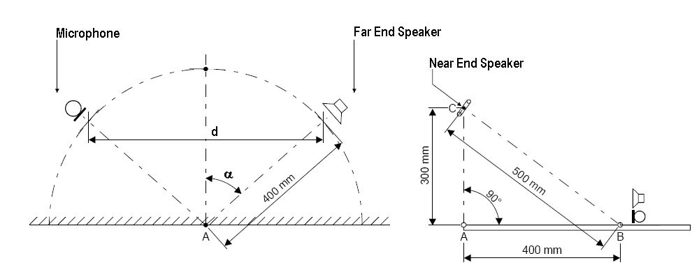
Audio Settings Application Note
80000NT10007a Rev.4 – 2010-10-04
12.6.
Practical Suggestions
In this section an application example will be described, related to a study of echo
cancellation in a silent room environment.
The geometry of the system is a very important aspect of AEC parameters tuning, so
the first step is to decide the spatially setup of the speaker-microphone system and the
setting of the gains (using audio parameters and/or external amplifiers), in order to
obtain the right speech levels.
The following figure shows the position of the microphone and speakers as suggested
by ITU P.340 Recommendation.
Figure 36. Test setup
We suggest to use an internal microphone gain as low as possible and, if it is needed
additional gain to the speaker, to implement it with an external amplifier, using the
internal gain only for fine tuning of the overall downlink gain.
WARNING:
Sidetone is always a harmful effect, so it must be disabled to help echo cancellation
action in any HandsFree application.
Start with the design of the filter length.
The AEC has been designed for echo delay ≤50 ms. For a good cancellation it’s enough
to take into account only the main echo coming from the near reflections have
negligible effects, due to longer delay echoes.
Reproduction forbidden without Telit Communications S.p.A. written authorization - All Rights Reserved
page 72 of 78


Audio Settings Application Note
80000NT10007a Rev.4 – 2010-10-04
With a distance d=60cm in our setup we estimated a maximum echo path L=10m, which
led to:
L
10m
t
,
29 4ms where
v = sound velocity
v
m
s
s
340 s
We chose 40ms to have enough margins for the worst cases.
Consider the level balance of the system.
EC uses the power estimation of the RX signal (x) and the power estimation of the TX
signal (y) for it’s coefficient calculation (see fig.34). Because the algorithm does not
take in account the gain of the loudspeaker amplifier as well as losses in the air path,
something about the real world condition has to be passed to AEC. The parameter to
use for this information is the Power Relation RX->TX.
INTERNAL
EXTERNAL
DIGITAL
ANALOGIC
ANALOGIC
GAINS
GAIN
GAIN
x
0dB
0dB
+13dB
L
AE C
Sidetone
O
S
S
0dB
+36dB
y
Figure 37. Echo chain
In order to allow the algorithm to compare the power values of x and y, the following
relation has to be respected:
y < x + (13 – LOSS + 36)
Reproduction forbidden without Telit Communications S.p.A. written authorization - All Rights Reserved
page 73 of 78


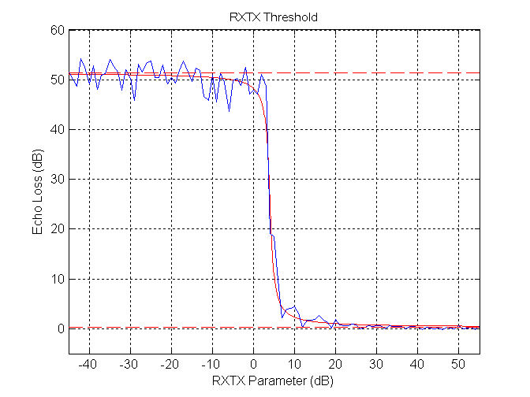
Audio Settings Application Note
80000NT10007a Rev.4 – 2010-10-04
that means :
y - (49 – LOSS ) < x
Estimation of LOSS is a difficult task, because in-air attenuation, speaker and
microphone characteristics as well as orientation-depending coupling, lead to a non
repetitive measure of this value. We have estimated this correction factor
experimentally spanning the parameter, obtaining a threshold behaviour, which can be
seen in following graphic.
Figure 38. Threshold Echo Loss behaviour
Experimentation in silent room has led to a threshold value of about 5dB.
12.6.1.
Warnings about RX →TX relation
WARNING:
Note that this is a threshold value that can guarantee a good behavior of AEC for that
configuration; it is a rule of thumb to keep some dB below this value
WARNING:
Reproduction forbidden without Telit Communications S.p.A. written authorization - All Rights Reserved
page 74 of 78


Audio Settings Application Note
80000NT10007a Rev.4 – 2010-10-04
Care has to be taken, because RXTX works as a threshold value for the AGC and so, in
presence of the only NEAR-END speaker, it can be attenuated if speech level is too low.
12.6.2.
Suggestions
With configurations that differ from this setup, which means different value for
amplifications and/or different spatially position of the transducers, parameter has to
be changed following the rules:
Higher gains has to be compensated lowering the RX→TX parameter by same value
Lower gains has to be compensated increasing the RX→TX parameter by same value
Lower LOSS (because of reduction of the distance between speaker and microphone,
or modifying the relative orientation of the two elements) has to be compensated like
the case of higher gain.
Vice versa if the LOSS increases.
When you have adjusted the RX→TX value taking into account either the EC matter,
either the minimum level for NEAR END speaker, then next step is to set Max AGC
attenuation, dependent on application and increasing with strength of echo (due to
spatial position or big gains) .
Additional attenuation is useful because it permits to the user to add a fixed
contribution to the final value of gain calculated by AGC.
We choose 6dB for additional attenuation, 0dB for minimum attenuation and 12dB for
maximum attenuation, because these values are a good compromise between reducing
echo and maintaining double-talk quality.
On the other hand it is possible to reproduce a half-duplex behaviour setting:
Maximum attenuation=90dB
Additional attenuation=90dB
so if AGC kicks due to RX→TX threshold (maximum effect at -90dB), it will be at
maximum attenuation.
Intermediate solutions are very closely related to particular application.
Regarding Noise Reduction, it’s important to say that its behaviour and tuning are
based on subjective tests.
Reproduction forbidden without Telit Communications S.p.A. written authorization - All Rights Reserved
page 75 of 78


Audio Settings Application Note
80000NT10007a Rev.4 – 2010-10-04
For maximum attenuation typical useful values are between 6dB and 18dB, because
bigger values determine very poor speech quality.
When tuning the weights parameters it is important to start with the lower ones and
then increase values, keeping a small difference between the two (at least making
them equal).
12.7.
AEC Basic Profiles
You have at your disposal one standard and three extended basic AEC profiles (see
table 9), corresponding to four basic environments.
Profile
Number
Description
0
standard
1
office
2
open air
3
small /medium car
Table 9. AEC Basic Profiles
All parameters are stored in NVM as default factory profiles, usable as they are or as a
starting setup.
In fact, by the dedicated AT command described at the paragraph 11.5, you can build
and save your own AEC profile, following the guidelines of the previous paragraphs.
Reproduction forbidden without Telit Communications S.p.A. written authorization - All Rights Reserved
page 76 of 78


Audio Settings Application Note
80000NT10007a Rev.4 – 2010-10-04
Every profile could be activated both for HS/MT path and for HF path.
Profile
Parameters
Office
Open
Small car
air
Medium car
Digital Input Scaling
0
0
0
Digital Output Scaling
0
0
0
Sidetone Attenuation
-1
-1
-1
Adaption Speed
2
2
2
FIR Filter Length
50
50
50
Power Relation RX->TX
-5
-10
-20
Noise Max Attenuation
6
12
12
Noise Weighting Factor Band 300-500Hz
2
4
6
Noise Weighting Factor Band 500-4000Hz
2
4
6
Gain Additional Attenuation
6
9
12
Gain Minimum Attenuation
0
0
0
Gain Maximum Attenuation
12
18
24
Table 10. Basic Profiles Parameters
Reproduction forbidden without Telit Communications S.p.A. written authorization - All Rights Reserved
page 77 of 78


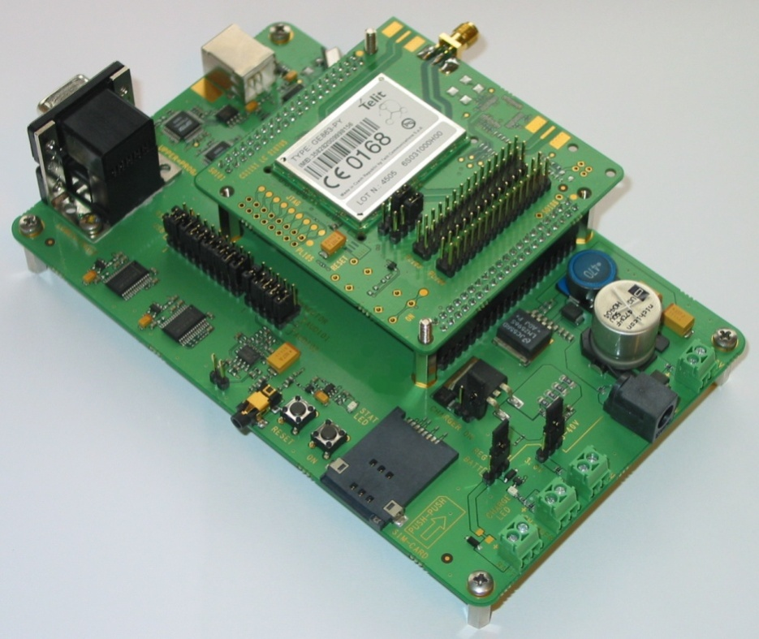
Audio Settings Application Note
80000NT10007a Rev.4 – 2010-10-04
13.
Telit Evaluation kit
Telit supplies the EVK2 to assist the designer during his developing project phase to
develop his own applications based on present and future GSM/GPRS/PCS Telit
modules.
The EVK2 provides a fully functional solution for a complete data/phone application,
and is formed by a CS1139B motherboard plus several dedicated Telit modules
Interface Boards with RF antenna connectors, as shown in the figure 39.
Figure 39. EVK2 (below) with and GE863-PY interface (upon).
For further details about EVK2 and its use in designing audio solutions, please refer to
the Telit EVK2 User Guide (1vv0300704).
Reproduction forbidden without Telit Communications S.p.A. written authorization - All Rights Reserved
page 78 of 78